CHAPTER 03 통계기법의 이해
원본: 06_빅분기필기-통계기법의 이해.pdf (책 1-274 ~ 1-341)
CHAPTER 03 통계기법의 이해
통계는 크게 기술통계와 추론통계로 나눌 수 있습니다. 기술통계에서는 확률분포의 이해가 중요합니다. 이산확률분포와 연속확률분포를 구별할 수 있어야 하며, 다양한 확률분포의 특징을 설명할 수 있어야 합니다. 추론통계에서는 점추정과 구간추정 방법을 비교해서 학습합니다. 특히, 정규분포를 이용한 신뢰구간을 추정하는 방법을 정확히 이해하는 것이 중요합니다.
SECTION 01 기술통계
빈출 태그 표본추출 · 확률 · 분포 · 기댓값 · 분산 · 중심극한정리
01 데이터 요약
기술통계(Descriptive Statistics)는 분석에 필요한 데이터를 요약하여 묘사 · 설명하는 통계기법을 말한다.
분석을 위해서 단순히 데이터를 정리하는 행위 자체는 의미가 없다. 분석 전 데이터의 특성을 찾아내서 그 특성의 정량화를 통한 체계적 요약이 필요하다.
| 중심화 경향 (Central Tendency) | 관찰 또는 수집된 데이터의 물리적 상대적 위치에 대한 정리 요약이다. |
| 분산도 경향 (Degree of Dispersion) | 데이터들이 흩어진 정도에 대한 기술 및 요약이다. |
| 자료의 분포형태 (Shape of Distribution, Skewness) | 자료의 분포가 대칭인지 치우쳐 있는지에 대한 기술 및 요약이다. |
분석대상이 되는 데이터의 단순 정리가 아닌 데이터의 분포가 가지는 특성을 찾아내서 본격적인 분석 이전에 기본적인 특징을 수치적으로 정량화하여 기술한다.
- 주로 기초 통계량을 산출하여 결과를 도출한다.
02 표본추출
- 모집단(Population) : 연구 · 실험의 결과가 일반화된 큰 집단, 정보를 얻고자 하는 관심 대상의 전체집합으로 정의한다.
- 표본(Sample) : 여러 자료를 포함하는 모집단 속에서 그 일부를 끄집어 내어 조사한 결과로 원래 집단의 성질을 추측할 수 있는 자료로 정의한다.
- 표본추출(Sampling) : 모집단으로부터 표본을 선택하는 행위(과정)를 말한다.
1) 전수조사와 표본조사
① 전수조사
관심의 대상이 되는 모집단 전체를 대상으로 조사하는 것이다.
- 인력(manpower)과 예산(budget)이 비교적 많이 소요된다.
- 현실적으로 집단 내 모든 단위를 조사하는 것은 불가능한 경우가 많기 때문에, 대부분의 통계조사는 표본조사에 의해 이루어진다.
② 표본조사
관심의 대상이 되는 모집단에서 표본을 추출하여 표본을 대상으로 조사를 시행하는 것이다.
- 기본적으로 전수조사가 정확한 결과를 도출할 수 있으나 비용문제 등의 제약사항이 존재한다. 따라서 모집단의 일부가 전체를 대표할 수 있다는 근거가 명확하다면 일부의 표본으로 조사분석을 시행하고 모집단 전체의 분석결과로 사용이 가능하다.
- 전수조사에 비해 비용 절감
- 조사결과의 신속성
- 조사규모가 크지 않기 때문에 심도 있는 조사 가능
- 관리가 비교적 잘 되어 정확성이 높음
2) 표본추출 오차(Sampling Bias, Sampling Error)
표본에서 선택된 대상이 모집단의 특성을 과잉 대표하거나 최소 대표할 때 발생한다.
- 과잉 대표 : 중복선택 등의 원인으로 모집단이 반복 · 중복된 데이터만으로 규정되는 현상을 지칭한다.
- 최소 대표 : 실제모집단의 대표성을 나타낼 표본이 아닌 다른 데이터가 표본이 되는 현상이다.
- 표본추출 시 표본의 크기(Sample Size)보다는 대표성을 가지는 표본을 추출하는 것이 중요하다.
3) 확률 표본추출 기법
모집단에 속하는 모든 추출단위에 대해 사전에 일정한 추출확률이 주어지는 표본추출법이다.
- 모든 표본들의 추출확률을 사전에 알 수 있다.
- 표본자료로부터 얻어지는 추정량의 통계적 정확도를 확률적으로 나타낼 수 있다.
① 단순무작위 추출(Simple Random Sampling)
통계조사에서 가장 기본이 되는 표본추출법이다.
- 모집단으로부터 무작위(randomly) 추출하고 독립적 선택으로 편향성(bias)을 제거하여 난수(Random Number)를 이용하는 것이 기본이다.
- 모집단내의 조사단위수(N)를 파악한 다음 원하는 표본수(n) 만큼 난수를 발생시키고 그 수에 해당되는 조사단위를 표본으로 선택하는 방법이다.
- 추출 모집단에 대해 사전지식이 많지 않은 경우 시행하는 방법이다.
② 계통추출(Systematic Sampling)
- 모집단에서 추출간격(Sampling Interval)을 설정하여 간격 사이에서 무작위로 추출하는 방법이다.
- 만일 전체 모집단이 N개인 집단에서 K(단, K<N)라는 추출간격으로 뽑는다면 N/K 수만큼 표본이 선택될 수 있다(1/K 계통추출법).
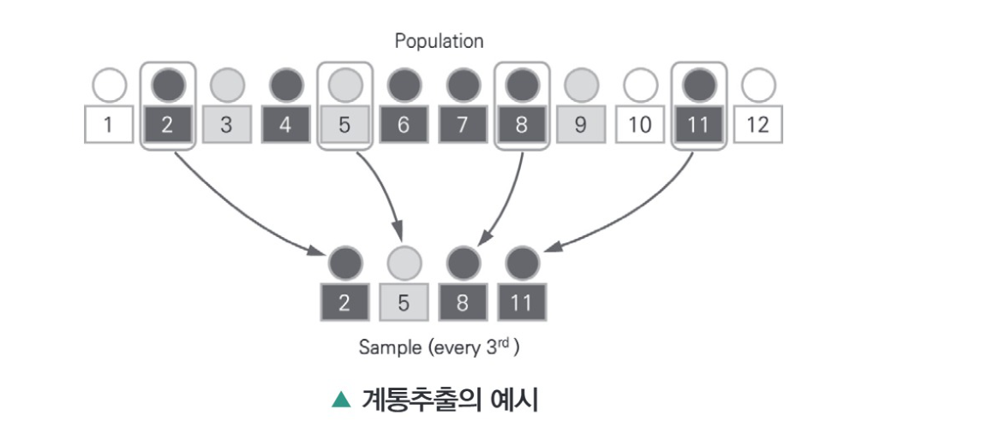
③ 층화추출(Stratified Sampling)
- 모집단을 서로 겹치지 않게 여러 층(strata)으로 나누어 분할된 층별로 배정된 표본을 단순 임의 추출법에 따라 추출하는 방법이다.
- 각 집단별 분석이 필요한 분석의 경우나 모집단 전체에 대한 특성치의 효율적 추정(추론)이 필요한 경우 시행한다.
예 모집단의 남녀 성비가 3:2이면 표본의 성비도 3:2가 되도록 뽑는 경우
- 층화추출의 특징
- 단순임의추출법에 비해 추정의 정도를 높일 수 있다.
- 전체 모집단에 대한 추정뿐만 아니라 각 층별 추정결과도 얻을 수 있다.
- 모집단을 효과적으로 층화할 경우 임의표본에서 구한 추정량보다 오차가 적게 되어 추정의 정도를 높일 수 있다.
- 표본의 대표성 제고 및 조사관리가 편리하고, 조사비용이 절감된다.
- 층화변수(Stratification Variable)
- 모집단을 몇 개의 층으로 나누려고 할 때 각 추출단위가 어느 층에 속하는지를 구분하기 위해 기준으로 사용되는 변수이다.
- 사전에 모집단 단위들의 정보를 쉽게 알 수 있으면서도 조사하고자 하는 주 변수와 밀접한 관련이 있는 보조 변수가 되어야한다.
- 질적 층화변수 : 변수값에 따라 층 구분
- 양적 층화변수 : 층의 경계점을 나누는 방법 필요
- 층화변수가 양적 변수인 경우 층의 최적경계점(optimum point of stratification)
- 1. 모집단을 n개의 층으로 나누려면 n−1개의 경계점을 결정해야 함
- 2. 추정값의 분산을 최소화시킬 수 있도록 경계점 결정
예 여론조사에서 층화변수의 선택시 성별, 지역, 연령, 학력 등을 기준으로 할 수 있다.
- 표본의 배분
- 각 층 내의 추출단위들의 수 : 많으면 크게 늘림
- 각 층 내에서 변동의 정도 : 변동의 정도가 커지면 크게 늘림
- 각 층에서 추출단위를 조사하는데 드는 비용 : 비용증가 시 줄임
- 표본 배분의 방법 예시
| 방법 | 특징 |
|---|---|
| 비례배분법 |
|
| 네이만배분법 |
|
| 최적배분법 |
|
④ 군집추출(Cluster Sampling)
- 모집단을 차이가 없는 여러 개 군집으로 나누어 군집의 단위의 일부 또는 전체에 대한 분석을 시행한다.
- 모집단에 대한 구체적인 추출 방법론을 정하기 어려운 경우 사용하면 편리하다.
- 표본크기가 같은 경우 단순 임의추출에 비해 표본 오차가 증대할 가능성이 있다.
4) 비확률 표본추출 기법
각 추출단위들이 표본에 추출될 확률을 객관적으로 나타낼 수 없는 표본추출법이다.
- 일반적으로 모집단을 정확하게 규정지을 수 없는 경우, 표본오차가 큰 문제가 되지 않는 경우, 본 조사에 앞서서 진행되는 새로운 개념에 대한 탐색적 연구 등에 사용한다.
- 비용, 시간, 조사의 편리함 때문에 자주 사용한다.
① 간편추출법(편의추출법, Convenience Sampling)
- 응답자를 선정하는 데 있어서 조사원 개인의 자의적인 판단에 따라 간편한 방법으로 표본을 추출하는 방법이다.
- 얻어진 표본이 목표모집단을 얼마나 잘 대표하는지 알 수 없고, 얻어진 통계치에 대한 통계적 정확성을 평가할 수 없다.
예 어떤 특정장소를 지나가는 사람들을 대상으로 여론조사를 하는 경우
② 판단추출법(Judgement Sampling)
- 조사자가 나름의 지식과 경험에 의해 모집단을 가장 잘 대표한다고 여겨지는 표본을 주관적으로 선정하는 방법이다.
- 판단추출법에 의한 표본은 조사자의 주관적 판단에 의해서 표본이 추출되기 때문에 그 표본을 통해 얻은 추정치의 정확성에 대해 객관적으로 평가할 수 없다.
- 표본의 크기가 작은 경우에 조사의 오차를 좌우하는 요인은 추정량의 분산이 될 수 있다.
예 어느 교육연구소의 연구원이 전체 학생들의 평균성적을 알아보기 위해 전체 학생들의 성적을 대표한다고 생각되는 몇 학교를 나름대로 선택하는 경우
③ 할당추출법(Quota Sampling)
- 조사목적과 밀접하게 관련되어 있는 조사대상자의 연령이나 성별과 같은 변수값에 따라 모집단을 부분집단으로 구분하고, 모집단의 부분집단별 구성비율과 표본의 부분집단별 구성비율이 유사하도록 표본을 선정하는 방법이다.
- 비용이 적게 들고 손쉽기 때문에 단기간에 조사를 해야하는 경우에 알맞은 방법이다.
예 어느 대학에서 학생 서비스 만족도를 조사하고자 한다면 기존의 자료에 의거하여 각 학과별, 학년별, 성별 구성비율을 알아본 다음, 그 비율에 따라 표본을 학과별, 학년별, 성별로 할당
④ 눈덩이추출법(Snowball Sampling)
- 접근이 어렵거나 추출틀(Sampling Frame)의 작성이 곤란한 특정한 집단에 대한 조사에서 사용되는 방법이다.
- 먼저 해당 집단에 속하는 것을 사전에 알고 있는 사람들을 대상으로, 해당 집단에 속하는 다른 사람들을 소개받아서 조사를 진행하는 방법이다(이와 같은 소개과정을 통해서 표본은 눈덩이처럼 점점 커지게 됨).
예 폭력조직원들의 약물사용 실태를 조사할 경우, 대학교수들의 금융투자자산에 대한 인식 조사를 할 경우
03 확률분포
확률과 확률분포는 모집단에 대한 추측 및 추론이 얼마나 정확한지에 대한 논리적 타당성을 제시하는 도구이다.
- 기술통계 : 분석에 필요한 데이터를 요약하고 묘사 · 설명하는 통계기법이다.
- 추측(추론)통계 : 표본에 내포되어 있는 정보를 이용하여 모집단에 대한 과학적인 추론을 하는 통계기법이다.
1) 확률의 개념
- 통계적 현상 : 불확정 현상을 반복하여 관찰하거나 혹은 집단 안에서 대량으로 관찰하여 그 고유의 법칙성을 찾아내는 것이 가능한 현상을 지칭한다.
- 확률 실험 : 같은 조건 아래에서 반복할 수 있다. 시행의 결과는 매번 우연적으로 변하므로 예측할 수 없으나, 가능한 모든 결과의 집합을 알 수 있다. 시행을 반복할 때 낱낱의 결과는 불규칙하게 나타나지만, 반복의 수를 늘리면 어떤 규칙성이 나타나는 특징을 가질 수 있다.
경우의 수
확률시험 1회의 시행에 있어서 일어날 수 있는 사건의 종류를 말한다.
- 합의 법칙 : 두 사건 A 또는 B가 일어나는 경우의 수를 고려할 때
- 곱의 법칙 : 두 사건 A, B가 동시에 일어나는 경우의 수를 고려할 때
- 순열 : 서로 다른 n개의 원소에서 r개를 중복없이 순서를 고려하여 선택하는 경우의 수
- 조합 : 서로 다른 n개의 원소에서 r개를 중복없이 순서를 고려하지 않고 선택하는 경우의 수
① 확률
확률은 통계적 현상의 확실함의 정도를 나타내는 척도이며, 랜덤 시행에서 어떠한 사건이 일어날 정도를 나타내는 사건에 할당된 수들을 말한다.
- 수학적 확률(Mathematical Probability) : 표본공간 S의 각 사건이 일어날 가능성이 동등할 때, 사건 A에 대하여 n(A)/n(S)를 사건 A의 수학적 확률이라고 한다. 이때, n(A)는 사건 A가 일어날 경우의 수, n(S)는 전체 사건에 대한 경우의 수이다.
＊＊ 주사위를 던질 때 6의 눈이 나올 확률은 1/6이다.
＊＊ 전체 카드(52장) 중 한 장 뽑았을 때 하트카드가 나올 확률은 13/52 = 1/4이다.
- 통계적 확률(Statistical Probability) : 일반적인 자연 현상이나 사회 현상에서 일어날 가능성이 동일한 경우가 많지 않아서 수학적 확률로 구할 수 없는 경우가 대부분이다. 이러한 경우 사건이 일어나는 확률을 상대도수에 의해 추정한다. 즉, n회의 시행에서 문제의 사건이 r회 일어났다고 하면 상대도수는 r/n으로 정의할 수 있으며, 이와 같이 추정되는 확률을 통계적 확률이라고 한다.
- 어떤 시행을 n번 반복하고, 사건 A가 일어난 횟수를 rn이라 할 때, n을 크게 함에 따라 rn/n이 일정한 값 p에 가까워지면, 이때 p를 사건 A의 통계적 확률이라 한다.
서울에서 출생한 남, 여 각 500명을 기준으로 각 연령대의 생존자 수를 표에 기록하였다.
| 생존자 수 | 남 | 여 |
|---|---|---|
| 0세 | 500 | 500 |
| 30세 | 440 | 450 |
| 60세 | 390 | 410 |
현재 30세인 남자가 60세까지 살아있을 확률을 구하면
통계적으로 30세인 남자가 60세까지 살아있을 확률은 390/440 = 88.6%이다.
② 사건(Event)
동일한 상태로 여러 차례 반복할 수 있는 실험이나 관측을 시행이라 하고, 시행의 결과로서 나타나는 것을 사건이라 한다.
- 사건은 개별적으로 발생할 결과일 수도 있고, 몇 가지의 복합된 결과의 집합이 될 수도 있다.
- 어떤 사건의 확률은 그 사건에 포함되어 있는 각 결과의 발생 확률의 합으로 나타낸다.
예 두 개의 동전을 던졌을 때, 하나만 앞면이 나올 사건의 확률은 [앞,뒤]가 나올 사건의 확률(1/4)과 [뒤,앞]이 나올 사건의 확률(1/4)의 합(1/2)으로 구할 수 있다.
③ 표본공간(Sample Space)
- 통계적 실험에서 모든 발생 가능한 실험결과들의 집합을 의미한다.
- 표본공간 자체는 전사건, 아무것도 포함하지 않는 사건은 공사건이라 하고 하나의 결과를 포함하는 사건은 근원사건이라고 한다.
- 표본공간이 S인 확률 실험에서 사건은 S의 부분집합이 된다.
예 두 개의 동전을 던졌을 때, 표본공간 S는 다음과 같이 정의된다.
S = { (앞,앞), (앞,뒤), (뒤,앞), (뒤,뒤) }
이때, 앞면이 적어도 한 번 나오는 사건 A는 다음과 같이 표현할 수 있다.
A = { (앞,앞), (앞,뒤), (뒤,앞) }
④ 확률의 기본성질
| 정리 1. 0 ≤ P(Ai) Ai : 근원사건 : 어떤 사건 A가 발생할 확률은 항상 0 이상이다. |
| 정리 2. P(S) = 1 S : 전공간 : 표본공간 S 사건이 발생할 확률은 1이다(사건은 무조건 표본공간 내에서 발생). |
| 정리 3. P(Ai ∪ Aj) = P(Ai) + P(Aj) − P(Ai ∩ Aj) 만약 Ai ∩ Aj = ϕ이면, P(Ai ∩ Aj) = 0, P(Ai ∪ Aj) = P(Ai) + P(Aj) : 사건 Ai 또는 Aj가 발생할 확률은 Ai가 발생할 확률과 Aj가 발생할 확률을 더한 값에서 Ai와 Aj가 동시에 발생할 확률을 뺀 것이다. : 서로 배반사건인 경우 P(Ai ∩ Aj) = ϕ는 각 사건의 발생 확률을 더한다. |
| 정리 4. P(Ac) = 1 − P(A) : Ac는 A의 여사건이며 A가 발생하지 않을 사건을 말한다. |
| 정리 5. P(A) ≤ 1, P(ϕ) = 0 : 존재하지 않는 사건이 일어날 확률은 0이다. |
| 정리 6. 만약 Ai ⊂ Aj이면, P(Ai) ≤ P(Aj) : Ai가 Aj의 부분집합이면 Ai가 발생할 확률은 Aj가 발생할 확률보다 작거나 같다. |
⑤ 조건부 확률
사건 B가 일어났다는 조건하에서 다른 사건 A가 일어날 확률을 말한다.
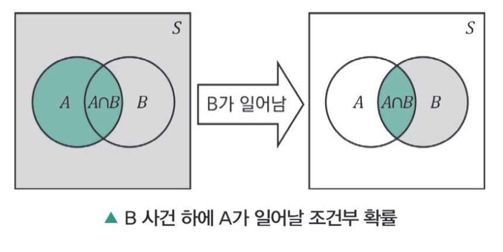
비슷하게
이것은 사건 A가 일어났다는 조건하에서 다른 사건 B가 일어날 확률을 말한다.
주사위를 던져서 2의 눈이 나올 확률은 1/6이지만 짝수라는 조건하에서는 1/3이 된다.
즉, 조건이 주어지지 않은 경우 표본공간은 {1,2,3,4,5,6}이지만 짝수라는 조건에서는 {2,4,6}으로 축소되는 것이다.
⑥ 결합 확률(확률의 곱셈)
사건 A와 B가 동시에 발생하는 확률로 이를 확률의 곱셈 법칙이라고 한다.
- P(A|B) = P(A ∩ B)P(B) 에서 A, B가 서로 독립이면 둘 사이의 조건부 확률은 P(A|B) = P(A)가 되므로 P(A ∩ B) = P(A) × P(B)의 결과 도출이 가능하다.
어떤 회사가 제작하는 공작기계가 1년내에 고장 날 가능성이 20%이다. 이 회사의 공작기계 2대를 구입할 때, 1년 내에 두 기계가 모두 고장 날 확률과 정확히 한 기계만 고장 날 확률을 구해보면 다음과 같다.
(두 기계의 고장 사건은 서로 독립적) 사건 A는 첫 번째 기계가 고장 날 확률, 사건 B는 두 번째 기계가 고장 날 확률이라고 하면 P(A)=0.2 P(B)=0.2이다.
그리고 두 사건은 서로 독립이므로 P(A∩B)=P(A)×P(B)=0.2×0.2=0.04이고 정확히 한 기계가 1년내 고장 날 확률은
＊＊ P(Ac∩B) : B가 고장날 때 A가 고장나지 않을 확률
⑦ 총확률정리(Total Probability Rule)
총확률정리는 임의의 사건 B의 확률을 k개의 조건부 확률을 이용해서 구하는 것이다.
- 사전에 표본공간은 상호 배타적인(i ≠ j이면 Ai∩Aj=Ø, P(Ai∩Aj)=0) 사건으로 분할(partition)적인 사건으로 분할되었다고 하면 임의의 사건 P(B)는 아래와 같이 표현이 가능하다.
표본공간이 상호 배타적인 사건 A1, A2, ⋯, Ak로 분할될 때,
⑧ 베이지안 정리(베이즈 정리, Baye's Theorem)
- 총확률정리를 이용하여 임의의 사건 B의 확률을 k개의 조건부 확률을 이용해 계산하면 베이지안 법칙을 이용하여 표본공간을 분할하는 k개의 상호 배타적인 사건 A1, A2, ⋯, Ak에 대한 사후확률(Posterior Probability)을 구할 수 있다.
- P(Ai)는 미리 주어진 사전확률(Prior Probability)이지만 사건 B라는 새로운 사건이 발생 시 P(Ai|B)의 확률을 구할 수 있고 이 확률이 사후확률이 된다.
- 베이지안 법칙은 사전에 어떤 사건 A에 대한 사전확률이 부여된 상태에서 어떤 사건 B에 관한 정보가 알려진 후, 그 사건 A에 대한 사후확률을 다음 아래와 같이 정리할 수 있다.
표본공간이 상호 배타적인 사건 A1, A2, ⋯, Ak로 분할될 때,
직장 남성의 30%는 지나친 흡연으로 인한 기관지에 이상이 있다고 알려져 있다. 실제 기관지를 검사하였을 때, 검사결과 90%가 이상이 있는 것으로 나타나고 기관지에 이상이 없는 경우에도 이상반응이 나타날 수 있는 확률이 10%이면, 임의의 직장 남성이 기관지 검사를 하였을 때 이상반응이 나타났지만 실제로 이상이 없을 확률은 얼마인가?
A1은 기관지에 이상이 있을 사건, A2는 이상이 없을 사건, 검사결과 이상반응이 나타날 사건을 B라고 한다면
와 같이 정리할 수 있다.
＊＊ P(B|A1) : 기관지에 이상이 있으며 검사결과 이상 반응이 나타날 확률
＊＊ P(B|A2) : 기관지에 이상이 없는데 검사결과 이상 반응이 나타날 확률
먼저 임의의 직장 남성이 기관지 검사를 하였을 때, 이상을 보일 확률은
이제 검사결과 이상이 있는 것으로 나타난 사람에게 실제로 기관지에 이상이 없는 사후확률은 다음 아래와 같이 구할 수 있다.
2) 확률변수
① 확률변수(Random Variable)
확률변수는 사건의 시행의 결과(확률)를 하나의 수치로 대응시킬 때의 값(확률값)을 의미하며, 일반적으로 대문자 X로 표기한다.
예를 들어, 동전 두 개를 던져 앞면이 나오는 횟수를 확률변수 X라고 하면, 다음과 같이 네 가지의 경우가 발생한다.
이때, 확률변수 X의 값을 구해보면, X(뒤−뒤)=0, X(앞−뒤)=1, X(뒤−앞)=1, X(앞−앞)=2가 된다. 즉, 확률변수 X가 취할 수 있는 값은 X=0, X=1, X=2와 같이 모두 세 가지가 된다. 확률변수에서 (앞−뒤), (뒤−앞)과 같은 특정 사건 결과는 생략하고 X=x와 같이 취하는 값만 표기한다.
＊＊ 확률변수 X가 특정한 값 x를 가질 때 그에 대한 확률은 P(X=x)로 표기한다. 앞면이 2개 나올 확률은 P(X=2)로 표기하면 된다.
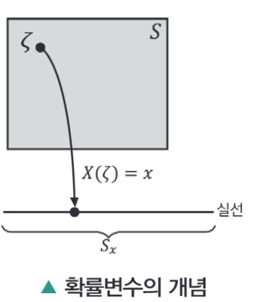
② 확률변수의 종류
- 이산확률변수(Discrete Random Variable) : 확률변수가 취할 수 있는 값의 수가 유한한 변수이다.
- 확률변수 X가 X={0, 1, 2, 3}이나 X={0.2, 0.3, 0.4} 등과 같이 셀 수 있는 값을 취할 때 이산확률변수라 한다. 동전을 던지거나 주사위를 던지는 사건 등은 셀 수 있는 경우이므로 이산확률변수에 해당한다.
- 연속확률변수(Continuous Random Variable) : 확률변수가 취할 수 있는 값의 수가 무한한 변수이다.
- 확률변수 X가 키, 몸무게, 시간과 같이 셀 수 없고 연속적인 값을 취할 때 연속확률변수라 한다. 연속확률변수는 확률변수가 특정한 값을 취할 때의 확률이 아닌 특정 구간 내에서의 확률값을 구하며, P(a ≤ X ≤ b)와 같이 표기한다. 예를 들어, 확률변수 X가 어떤 집단의 몸무게를 나타낼 때 몸무게가 50에서 60일 확률은 P(50 ≤ X ≤ 60)로 나타낸다.
3) 확률분포
확률분포는 수치로 대응된 확률변수의 개별 값들이 가지는 확률값의 분포이다.
| y | 2 | 3 | 4 | 5 | 6 | 7 | 8 | 9 | 10 | 11 | 12 |
|---|---|---|---|---|---|---|---|---|---|---|---|
| P(Y=y) | 1/36 | 2/36 | 3/36 | 4/36 | 5/36 | 6/36 | 5/36 | 4/36 | 3/36 | 2/36 | 1/36 |
확률변수가 취할 수 있는 구체적인 값을 확률공간상의 확률값으로 할당한다.
① 이산확률분포(Discrete Probability Distribution)
확률변수가 취할 수 있는 값의 수가 유한하거나 셀 수 있는 확률분포이다.
- 확률질량함수(Probability Mass Function) : 이산확률변수에서 특정 값에 대한 확률을 나타내는 함수 f(x)=P(X=x)이다.
② 연속확률분포(Continuous Probability Distribution)
확률변수가 취할 수 있는 값의 수가 무한하며 연속적인 확률분포이다.
- 확률밀도함수(Probability Density Function) : 확률 변수의 분포를 나타내는 함수이다.
③ 확률분포함수(Probability Distribution Function, 확률함수)
확률변수가 취할 수 있는 구체적인 값 하나하나를 확률공간상의 확률값으로 할당해주는 함수를 의미한다.
- 이산확률분포함수(Discrete Probability Distribution Function) : 확률변수가 이산적인 확률분포를 가지는 함수이다.
- 연속확률분포함수(Continuous Probability Distribution Function) : 확률변수가 연속적인 확률분포를 가지는 함수이다.
4) 확률변수의 기댓값과 분산
① 기댓값(Expected Value)
각 확률변수가 특정 값을 가질 확률을 가중치로 확률변수의 결과값을 평균화한 값으로 표시한다.
- 이산확률변수의 기댓값
- 연속확률변수의 기댓값
② 기댓값의 성질
- 기댓값의 선형성
상수 a, b와 확률변수 X에 대해서 다음 식이 성립한다.
- 기댓값의 덧셈법칙
두 확률변수 X, Y에 대하여 X+Y의 기댓값은 X의 기댓값과 Y의 기댓값을 더한 것과 같다.
(두 확률변수가 독립이든, 종속이든 무관하게 항상 성립)
- 기댓값의 곱셈법칙
두 확률변수 X, Y에 대하여 일반적으로 곱셈법칙이 성립하지 않는다.
하지만, 두 확률변수 X, Y가 독립이면 곱셈법칙이 성립한다.
③ 분산(Variance)
확률분포의 산포도(퍼짐정도)를 나타내는 측도로 기댓값에서 떨어진 거리의 제곱의 기댓값(평균)이며 Var(X)로 표시한다.
- 이산확률변수의 분산
- 연속확률변수의 분산
④ 분산의 성질
연속형확률변수가 다음과 같다고 하면
확률의 성질 만족여부는
모든 x에 대해서 0 ≤ f(x) ≤ 1
P(X<1/2)일 확률은
누적분포함수는 0<x<1 일 때,
따라서
평균과 분산은 다음과 같이 구할 수 있다.
5) 이산확률분포의 종류
① 베르누이 분포(Bernoulli Distribution, X∼Bern(x,p))
결과가 성공 아니면 실패, 두 가지로 귀결되어 나오는 이산확률분포이다.
- 확률질량함수 f(x) = pxq1−x
- 기댓값 E(x) = p
- 분산 Var(X) = pq
② 이항분포(Binomial Distribution, X∼B(n,p))
베르누이 시행을 n번 독립적으로 시행할 때 성공횟수를 X로 정의한 이산확률분포이다.
- 확률질량함수 f(x) = (nx)pxqn−x
- 기댓값 E(x) = np
- 분산 Var(X) = npq
동전을 3번 던졌을 때 앞면이 나오는 횟수를 X라고 할 때, 앞면이 두 번 나올 확률은
③ 다항분포(Multinomial Distribution)
여러 개의 값을 가질 수 있는 독립 확률변수들에 대한 확률분포로, 여러 번의 독립적 시행에서 각각의 값이 특정 횟수가 나타날 확률을 정의하는 분포이다.
- 확률질량함수
- 기댓값 E(Xi) = npi
- 분산 Var(Xi) = npi(1 − pi)
어느 공항의 항공기 이착륙 상황에 대한 이상적인 조건을 알아보기 위해 컴퓨터 시뮬레이션이 수행되었을 때, 3개의 활주로가 있는 이 공항에서 각 활주로가 사용될 확률은 다음과 같고, 임의로 도착하는 6대의 비행기가 다음과 같이 활주로에 도착할 확률은 다음과 같다.
이 경우 확률은 다항분포에 의해
④ 포아송분포(Poisson Distribution, X∼Pois(λ))
단위 시간 안에 어떤 사건이 몇 번 발생할 것인지를 표현하는 이산확률분포이다. 이것은 단위공간이나 면적 등에도 적용될 수 있다. 예를 들면 특정 시간대에 은행창구에 도착한 고객의 수, 책 한 페이지당 오탈자의 수, 하루 동안 걸려오는 전화의 수 등이 될 수 있다.
X를 단위시간당 발생건수라고 하면 포아송분포는 평균 사건 발생수 λ에 의해 유도된다. 그러므로 포아송분포는 기댓값과 분산이 동일하게 정의된다.
- 확률질량함수 f(x) = λxe−kx!
- 기댓값 E(X) = λ
- 분산 Var(X) = λ
- 포아송분포의 근사 : 이항분포는 n과 p라는 두개의 모수에 유도되지만 포아송분포는 λ(평균 사건 발생수) 하나로 정의되므로 이항분포를 포아송분포로 근사시켜 확률을 구하는 경우도 있다. 경험적으로 이항확률변수 X는 n이 무한히 커지고 성공확률 p가 매우 작다면(n ≥ 30, p ≤ 0.05) λ=np(이항분포의 기댓값)으로 될 수 있고 포아송분포를 따른다.
대형 호텔의 자료에 따르면 통상적으로 호텔을 예약한 사람의 5% 정도는 당일 호텔을 이용 안하고 예약을 취소한다고 알려져 있다. 그래서 통상적으로 실제 호텔 객실수 보다 다소 많은 예약을 받는 경우가 있다고 한다. 한 지역의 호텔 객실수가 95개인 한 지점에서 예약건수가 100이라고 할 때, 당일 호텔에 도착한 사람들이 모두 호텔에 들어갈 확률은?
당일 도착한 예약건수가 95이하이면 모두 투숙을 할 수 있다. 즉 예약 건수 100건이면 5건 이상 취소를 하면 된다. 즉 n=100, p=0.05라고 하면 이항분포의 포아송근사에 의해 λ=np=100×0.05가 되고 확률변수 X를 호텔 취소수라고 하면 P(X≥5)이다. 이는
로 나타낼 수 있다(여기서 분포값의 경우는 포아송확률 분포표를 활용).
⑤ 기하분포(Geometric Distribution)
베르누이 시행에서 처음 성공까지 시도한 횟수를 분포화한 이산확률분포의 한 종류이다.
- 확률질량함수 f(x) = pqx−1, (q = 1 − p)
- 기댓값 E(X) = 1/p
- 분산 Var(X) = q/p2
어떤 학생이 한 자격증 시험에 합격할 확률은 0.70이다. 이 학생이 4번만에 붙을 확률은?
X는 응시횟수라고 하면 P(X)=q3p=(0.3)3×0.7=0.027×0.7=0.0189가 된다.
⑥ 음이항분포(Negative Binomial Distribution)
x번의 베르누이 시행에서 k번째 성공할 때까지 계속 시행하는 실험에서의 확률을 나타내는 이산확률분포이다. 전체 x번의 시행에서 생각해보면 x−1까지 k−1개의 성공이 있어야 한다. 이 경우 실패의 갯수는 (x−1)−(k−1)=x−k가 된다.
- 확률질량함수 f(x) = (x−1k−1)qx−kpk, x = k, k+1, ⋯
- 기댓값 E(X) = k 1 − pp
- 분산 Var(X) = k 1 − pp2
한국시리즈는 7전 4선승제로 치루어 진다. 두 팀의 승률을 안다고 했을 때 각 팀이 실제 7번 경기만에 우승이 결정될 확률을 계산할 수 있다.
팀 A, B가 우승을 경쟁할 때, A팀이 승률이 0.70이라고 하면 A팀이 7전째 우승할 확률은(즉, 4승할 확률은) k=4, p=0.70이므로
⑦ 초기하분포(Hypergeometric Distribution)
비복원 추출에서 N개 중에 n개를 추출했을 때, 원하는 것 k개가 뽑힐 확률을 나타내는 이산확률분포이다.
- 확률질량함수 fX(k) = (Kk)(N−Kn−k)(Nn)
N : 전체 모집단의 개체수 , K : 전체 모집단에서 성공의 횟수
n : 전체 시행 횟수, k : 관찰된 성공의 횟수
- 기댓값 E(x) = n KN
- 분산 Var(x) = n KN ( N−KN )( N−nN−1 )
한 공장에서 제품을 생산하는데 한 포장박스에 12개의 제품을 넣는다. 검사자는 한 박스에서 3개를 무작위로 뽑아 검사한다. 박스에 5개의 불량품이 있다고 하면 검사자가 뽑은 3개 제품 중 불량품 1개가 들어갈 확률은 다음과 같다.
확률변수 X는 표본(n=3) 중 우리가 원하는 값은 k=1 여기서 N=12, K=5이므로
6) 연속확률분포의 종류
① 연속균등분포(Continuous Uniform Distribution, X∼U(a,b))
연속균등분포는 연속확률분포로, 분포가 특정 범위 내에서 균등하게 나타나 있을 경우를 가리킨다. 이 분포는 두 개의 매개변수 a, b를 받으며, 이때 [a,b] 범위에서 균등한 확률을 가진다. 보통 기호로 U(a,b)로 나타낸다.
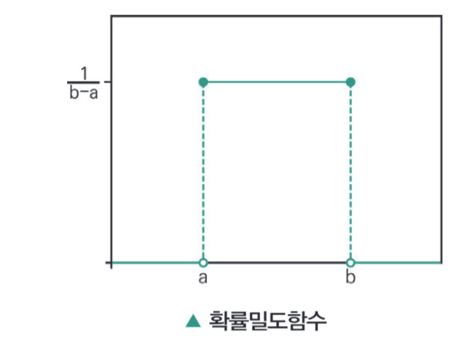
- 확률밀도함수 f(x) = 1b−a
- 평균 a+b2
- 분산 (b−a)212
어떤 마을버스는 정류장에서 정확히 5분 간격으로 출발한다. 한 학생이 정류장에 임의로 도착하여 버스가 발차할 때까지 기다리는 평균 시간과 3분 이상 기다릴 확률을 구하라.
X : 학생이 도착한 시간
X는 [0,5]에서 연속균등분포를 따르므로 확률밀도함수는
X분에 도착하여 기다리는 시간은
평균은
3분 이상 기다릴 확률을 구하면
여기서 F(x)는 누적확률밀도함수이다.
** 연속균등분포의 누적 밀도 함수는
② 지수분포(Exponential Distribution, X∼Exp(β))
사건이 서로 독립적일 때, 일정 시간 동안 발생하는 사건의 횟수가 포아송분포를 따른다면, 다음 사건이 일어날 때까지의 대기시간(β)에 대한 확률이 따르는 분포이다. 즉 포아송과정에서 한 개의 사건이 발생할 때까지의 대기 시간을 의미한다.
- 확률밀도함수 f(x) = 1βe−x/b, x > 0
- 평균 β
- 분산 β2 : 지수분포의 경우는 평균과 표준편차가 같은 분포이다(포아송은 평균과 분산이 동일).
확률변수 X가 소방서에 화재신고 등 구조요청이 걸려오는데 기다리는 시간이라 하고 평균적으로 전화 오는데 걸리는 시간이 20분이라고 하면 확률밀도함수는
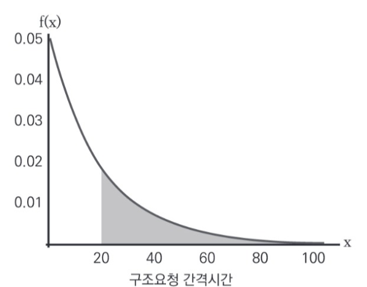
평균과 분산은
P(X>20)인 확률의 계산은
- 지수분포와 포아송분포의 관계 : 포아송분포는 단위 시간당 발생하는 사건의 횟수를 관측한다. 반면 지수분포는 사건이 일어날 때까지의 대기 시간을 관측하는데 관심이 있는 것이다. 즉, 지수분포는 대기시간, 포아송분포는 횟수이다.
- 지수분포의 무기억성질(Memoryless Property)
X∼Exp(β)일 때 어떤 수 a, b에 대해P(X > a+b | X > a) = P(X > b)가 성립하는데이 성질을 지수분포의 무기억성질이라고 한다.
이는 P(X > a+b | X > a)의 고려 시 이전의 a에 대한 확률값은 고려대상이 안되며 결국 P(X > b)만 고려하면 된다는 의미이다.
어떤 부품의 수명이 평균 300시간을 가진다고 하면 (β = 300인 지수분포를 따른다.)
이 부품이 100시간동안 고장나지 않았을 때, 앞으로 400시간동안 고장나지 않고 작동할 확률은
과 같다는 것이 무기억성질(Memoryless Property)인데
이것은
그러므로 무기억성질을 만족한다.
③ 정규분포(Normal Distribution, X∼N(μ, σ²))
정규분포는 19세기의 위대한 수학자 Carl Friedrich Gauss에 의해 물리학과 천문학 등에 폭넓게 응용되기도 하였는데 이러한 연유로 정규분포를 가우스분포(Gaussian Distribution)라 부르기도 한다.
정규분포는 표본을 이용한 통계적 추정과 가설검정 이론의 핵심이 되는 분포이며, 실제로 사회적 · 자연적 현상에서 수집된 많은 자료들이 정규분포에 근사하는 경향을 보인다.
- 확률밀도함수 f(x) = 1σ2πe−12(x−μσ)2
- 평균 μ
- 분산 σ2
- 정규분포의 특징
- 정규분포는 평균을 중심으로 대칭이며 종모양(bell-shaped)인 확률밀도함수의 그래프를 띤다.
- 정규분포의 모양과 위치는 평균과 표준편차에 의해 완전히 결정된다.
- 분포의 평균과 표준편차가 어떤 값을 갖더라도, 정규곡선과 X축 사이의 전체 면적은 1이다.
- 정규분포를 가지는 확률변수, 즉 정규확률변수(Normal Random Variable)는 평균 주위의 값을 많이 취하며 평균으로부터 좌우로 표준편차의 3배 이상 떨어진 값은 거의 취하지 않는다.
- 정규분포곡선은 X축에 맞닿지 않으므로 확률변수 X가 취할 수 있는 값의 범위는 −∞ 〈 X 〈 +∞이다.
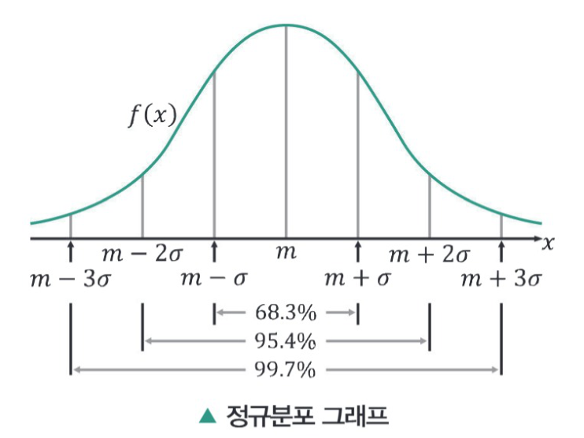
④ 표준정규분포(Standard Normal Distribution, X∼N(0, 1))
정규확률변수가 어떤 범위의 값을 취할 확률을 계산할 때 매번 확률밀도함수 그래프의 밑부분에서 그 범위에 해당하는 넓이를 구하는 일은 매우 번거로우며, 정규분포의 위치는 평균과 표준편차에 따라 달라지게 된다.
따라서 모든 정규확률변수는 적당한 변환을 취하여 수많은 가능한 정규분포에 모두 적용할 수 있는 표준정규분포를 이용하여 분포의 모양을 통일한 다음, 확률을 계산하는 방법을 사용하면 편리하다.
- 표준정규분포는 평균 μ=0, 표준편차 σ=1이 되도록 표준화한 정규분포이다.
- 정규화 : 어떤 관측치 X의 값이 그 분포의 평균에서 표준편차 대비 얼마나 떨어져 있는지를 표준화된 정규분포 변환식에 의해서 알 수 있다.
- 표준정규분포표에 의해서 해당 확률변수의 확률값 계산이 가능하다.
어느 과목 수강생들의 점수는 평균이 80, 분산이 100인 정규분포를 보인다고 한다. 총 100명의 수강생 중에서 어떤 학생이 80점에서 85점 사이의 점수를 받았을 확률은 얼마인가? 그리고 82점 이하를 받을 학생은 몇 명인가?
한 학생이 80점~85점 사이의 점수를 받을 경우 :
(부록의 표준정규분포표를 참고) P(80 ≤ X ≤ 85) = P(0 ≤ z ≤ 0.5) = 0.1915
82점 이하를 받을 학생은 :
P(X≤82) = P(z≤0.2) = 0.5 + 0.0793 = 0.5793이므로 100명중 57.93%, 따라서 57.9명이 될 수 있다.
⑤ 감마분포(Gamma Distribution)
연속 확률분포로, 두 개의 매개변수를 받으며 양의 실수를 가질 수 있다. 감마분포는 지수분포나 포아송분포 등의 매개변수와 연관이 있는 분포로 포아송과정(1/λ=θ)에서 k개의 사건이 발생할 때까지의 대기시간으로 확률변수 X를 정의할 수 있다.
- 사건의 횟수(λ)가 포아송분포를 따른다면, 다음 사건까지의 대기시간은 θ=1/λ
- 모수는 k〉0, θ〉0
- 확률밀도함수 f(x, k, θ 1Γ(k)θkxk−1e−x/h, x > 0
- 여기서 Γ(α)는 감마함수로 다음과 같이 정의된다.
Γ(k) = ∫0∞ xk−1e−xdx = { (k−1)! , 양의 정수 / π , k = 1/2 }k ≥ 1인 정수일 때,
Γ(k) = (k−1)! = (k−1)(k−2)! = (k−1)Γ(k−1)그리고 a > 0일 때,
∫0∞ xke−axdx = k!ak+1 = Γ(k+1)ak+1 - 기댓값 kθ
- 분산 kθ2
- 감마분포의 특징
(k, θ)=(1, θ) 경우의 감마분포는 지수분포와 동일하다.
신뢰성 이론이나 수명시험에 유용하게 사용된다.
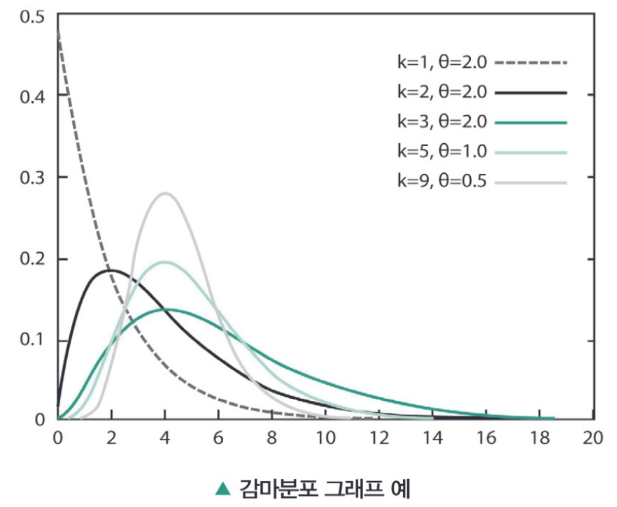
손님의 방문횟수는 평균 λ=0.5(명/분)인 포아송 분포를 따른다고 한다. 처음 2명의 고객이 방문할 때까지 5분 이상 기다릴 확률은?
확률변수 X : k=2 즉 2명이 방문할 때까지 걸리는 시간
먼저 1명 방문할 경우의 평균 소요시간은 θ=1/λ=1/0.5=2(분/명)
그러므로
평균은 kθ = 2×2 = 40이고 분산은 kθ2 = 2×22 = 80이 된다.
⑥ 카이제곱분포(Chi-Squared Distribution, X∼χ²(k))
- k개의 서로 독립적인 표준정규확률 변수를 각각 제곱한 다음 합해서 얻어지는 분포로 정의한다.
- 양의 정수 k가 주어졌을 때, k개의 독립적이고 표준 정규분포를 따르는 확률변수 X1,⋯, Xk를 정의하면 k의 카이제곱분포는 W = Σi=1k Xi2를 확률변수로 가지는 분포이다.
- 자유도(df, Degree of Freedom) : k를 지칭하는 것으로 카이제곱분포의 매개변수가 된다.
- 확률밀도함수 f(x; k) = 12k2Γ(k2)xk2−1e−x/2 = {x°C0}
여기서 Γ(k) = ∫0∞ tk−1e−tdt 단, k가 자연수이면 Γ(k) = (k−1)!
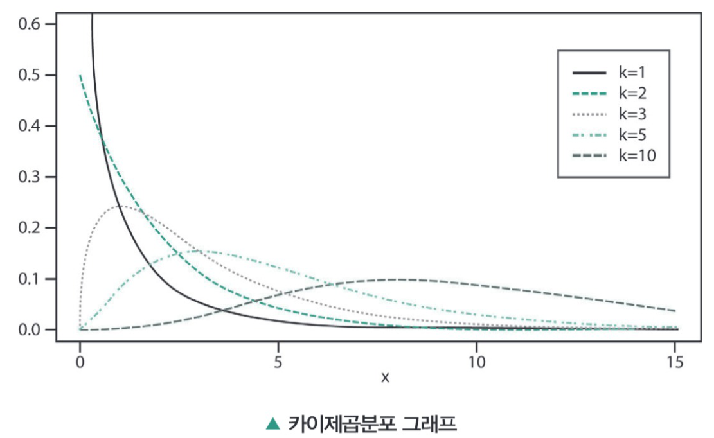
- 기댓값 k
- 분산 2k
- 카이제곱분포의 특징
(k/2, θ)=(k/2, 2) 경우의 감마분포가 카이제곱분포가 된다.f(x, k, θ) = 1Γ(k)θk xk−1e−x/θ, x > 0, 감마분포(k/2, θ)=(k/2, 2) 라고 하면f(x, k/2, 2) = 1Γ(k/2)2k/2 xk/2−1e−x/2, 카이제곱분포 - 카이제곱분포는 신뢰구간이나 가설 검정에서 많이 사용된다.
⑦ 스튜던트 t 분포(Student t-Distribution, X∼t(n−1))
- 정규분포의 평균 측정 시 주로 사용하는 분포이다. 분포의 모양은 Z−분포와 유사하다. 종 모양으로서 t=0에 대하여 대칭을 이루는데 t−곡선의 모양을 결정하는 것은 자유도이다.
- 확률변수의 분포(검정통계량) T는 ZV/ν 로 정의된다.
Z는 표준 정규분포, V는 자유도 ν인 카이제곱분포
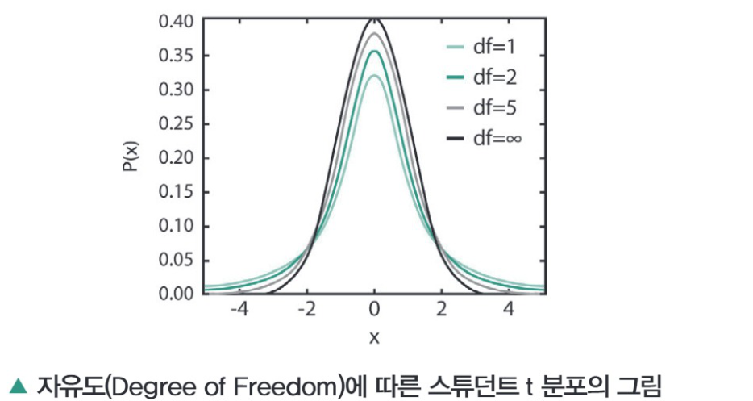
- 자유도 : 표본 크기 n에서 1을 뺀 것이다.
자유도란 자료집단의 변수 중에서 자유롭게 선택될 수 있는 변수의 수를 말한다. 자유도는 S2을 계산하는데 사용된 정보의 양으로서 분모 항과 같다.
표본크기가 n인 랜덤표본에서는 제공되는 정보의 양이 n개이다. 그러나 다음에서 알 수 있는 바와 같이 S2을 계산할 때는 표본평균(모든 관측값의 합)이 이미 계산되었다.
즉, n개의 정보 중에서 표본평균을 계산하는데 하나의 정보를 상실하였다. 따라서 전체 n개의 정보에서 하나를 제거한 (n−1)이 S2을 계산할 때 사용된 정보의 양이다.
확률변수 X가 10개의 값을 갖게 되고 그 평균을 구했다고 하자. 이때 10개의 변수 중 일단 9개만 정해지면 평균이 알려져 있으므로 나머지 하나는 자동적으로 정해짐을 알 수 있다. 그러므로 이 경우의 자유도는 n−1=9가 된다.
- 확률밀도함수 f(x) = Γ(ν+12)νπΓ(ν2) (1 + x2ν)−(ν+12), ν는 자유도
- 기댓값 0 (ν〉1일 때), 나머지는 정의되지 않음
t−분포는 양쪽이 대칭이므로 자유도가 20일 때, t가 −1.725보다 작을 확률이 0.05가 되며, t가 −2.086보다 작을 확률도 역시 0.025가 된다.
⑧ F 분포(F Distribution, X∼F(k1, k2))
- 두 개의 확률 변수 V1, V2의 자유도가 각각 k1, k2이고 서로 카이제곱분포를 따른다고 할 때, 다음 아래와 같이 정의된 확률변수(검정 통계량)
- F 분포는 F 검정이나 분산분석 등에 주로 사용되는 분포함수이다.
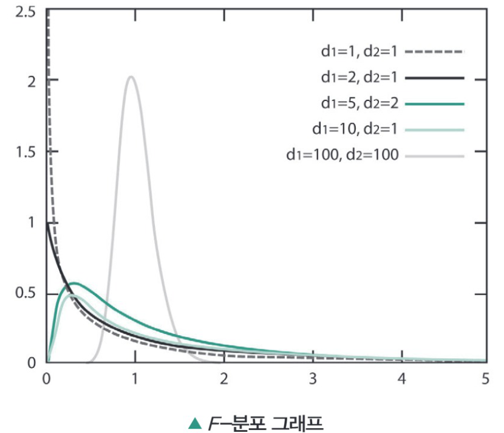
- 확률밀도함수
- 기댓값 d2d2−2 (단, d2 > 2)
04 표본분포(Sampling Distribution, Finite-sample Distribution)
표본분포는 크기 n의 확률표본(Random Sample)의 확률변수(Random Variable)의 분포이다. 하나의 표본으로부터 계산된 통계량(statistic)은 여러 가지가 있으나 평균을 가장 많이 사용하므로 평균을 사용한 표본분포를 대표적으로 기술한다.
1) 모집단 분포와 표본분포
① 모집단의 모수(parameter)
- 모집단의 평균 μ, 모집단의 표준편차 σ
- 모집단의 특성을 나타내는 특성값은 모수라고 정의한다.
② 표본의 통계량
- 표본집단의 평균 X, 표본집단의 표준편차 S
- 표본집단의 특성을 나타내는 특성값은 통계량이라 정의한다.
2) 표본평균의 표본분포
모집단으로부터 표본을 추출하였을 때 얻을 수 있는 모든 표본평균값(X)을 확률변수로 하는 확률분포이다.
3) 표본평균의 표본분포 통계량
① 표본평균의 표본분포의 평균
- 표본평균 X의 표본분포의 평균은 모집단의 평균 μ와 동일하다.
모집단의 평균을 μ라 놓고 모집단에서 크기가 n인 표본을 추출한다고 가정한다. (xi, i=1,2,3,⋯,n)
(X) = Σi=1n xin 에서 기댓값을 정의하면 다음 아래와 같이 쓸 수 있다.
이것을 정리하면
각각의 표본의 평균은 모집단의 평균과 같으므로
② 표본평균의 표본분포의 분산(표준편차)
모집단의 표준편차가 σ이면 표본분포의 표준편차는 σ/n이라고 정의한다.
특히 표본평균의 표본분포는 N(μ, (σ/n)2)인 정규분포를 따른다.
위 식을 정리하면
모든 i=1, 2, ⋯, n에 대해서 E(xi) = E(X)이고,
E(X) = μ이므로
정리하면
③ 표준오차(Standard Error of the Mean)
표본평균 X의 평균과 표준편차를 각각 μX, σX로 표시하는데 특히, 표본평균 X의 표준편차 σX를 평균의 표준오차 또는 간단히 표준오차라 한다.
- 모집단의 크기가 무한대에 한해서 표본평균의 표준오차는 σn
- 모집단 크기가 유한한 경우 표준오차
여기서 N−nN−1 는 유한 모집단 수정계수(Finite Population Correction Factor)라 한다. 또한 표본집단의 크기 n이 모집단 크기의 5% 이상 시 유한 모집단 수정계수를 사용하여 표준편차를 산출한다.
4) 중심극한정리(Central Limit Theorem)
동일한 확률분포를 가진 독립 확률변수 n개의 평균의 분포는 n이 적당히 크다면 정규분포에 가까워진다는 정리이다.
① 린데베르그-레비(Lindeberg-Levy) 중심극한정리
만약 확률변수 X1, X2,⋯, Xn들이 서로 독립이고 같은 확률분포를 가지며 그 확률분포의 평균과 표준편차가 유한하다면 평균 Sn = X1+X2+⋯+Xnn 의 분포는 기댓값 μ, 표준편차 σ/n인 정규분포 N(μ, σ2/n)에 수렴한다. 즉,
② 중심극한정리의 의미
- 모집단의 분포가 무엇이든 상관없이 표본의 수가 큰 표본분포들의 표본평균의 분포가 정규분포를 이룬다는 의미이다.
- 즉 정규분포는 다시 표준정규분포로 변환이 가능하므로 우리가 알고 있는 표준정규분포의 각종 결과를 이용하여 추정(판단)을 할 수 있다.
5) 표본평균의 표준화
- 표본평균 X는 정규분포의 확률변수로서 평균이 μ, 표준오차 σ/n이므로 표준화는
표준화 z는 확률변수인 표본평균 X가 모평균인 μ로부터 표본평균들의 표준편차인 표준오차의 몇 배만큼 떨어져 있는가를 표시하는 것이다. 따라서 다음과 같은 확률관계를 나타낼 수 있다.
| 대표적 k 값 | k에 해당되는 표준정규분포상의 확률값 |
|---|---|
| 1 | P( μ − σn ≤ X ≤ μ + σn ) = P( −1 ≤ X − μσn ≤ 1 ) = 0.68 |
| 2 | P( μ − 2σn ≤ X ≤ μ + 2σn ) = P( −2 ≤ X − μσn ≤ 2 ) = 0.95 |
| 3 | P( μ − 3σn ≤ X ≤ μ + 3σn ) = P( −3 ≤ X − μσn ≤ 3 ) = 0.997 |
- 표본평균의 구간확률
- 표준화 z를 통해서 표본 평균을 표준화한 후 표준정규분포표를 이용하여 확률을 찾으면 된다.
어떤 공장이 생산하는 제품의 평균 길이는 1m이며 표준편차는 1cm인 정규분포로 따른다고 한다.
16개의 표본을 조사하여 길이를 측정한 결과 표본 평균이 모평균과 의 차이가 0.3cm 이내일 확률을 구해보면 P(|X16−μ| ≤ 0.3) = P(−0.3 ≤ X16−μ ≤ 0.3)을 구하는 것이므로
그러므로 77% 이상의 확률로 표본평균과 모평균의 차이는 0.3cm이내가 된다고 볼 수 있다.
여기서 만일 표본의 개수를 늘리면, 예를 들어 25개로 늘리면
즉 표본의 개수를 늘리면 표본평균이 모평균과 가까워질 확률값은 더욱 커짐을 알 수 있다.
6) 표본비율(Sample Proportion)
크기가 N인 모집단으로부터 표본크기가 n인 표본을 추출 시 이 표본을 구성하는 n개의 개체들을 통해 조사하고자 하는 결과가 성공 또는 실패로 구분될 때, 표본을 구성하는 n개의 개체 중에서 성공으로 나타나는 개체 수의 비율을 표본비율이라고 하며 보통 P̂로 표시한다.
- 모비율 : 모집단에서 성공으로 나타나는 개체 수의 비율을 모비율이라고 하며 모집단의 특성을 나타낸다.
7) 표본비율의 표본분포(Sampling Distribution of Sample Proportion)
표본으로 추출될 가능성이 있는 모든 표본들에 대한 표본비율 값의 확률분포를 표본비율의 표본분포라 한다.
- 모비율과 비슷한 표본비율을 가진 표본들이 추출될 가능성은 매우 클 것으로 기대되지만 반대의 경우는 희박해질 것이 예상될 때, 이렇게 표본으로 추출될 가능성이 있는 모든 표본비율의 값을 표본분포라 정의한다.
① 표본분포에서의 평균과 표준오차
표본의 크기가 클 때, 중심극한정리에 의해 표본분포는 모비율 P(평균)이고 표준오차는
- 표본크기가 클 때는 보통 np ≥ 5와 nq ≥ 5가 모두 성립할 때이다(단, 모비율이 극단적으로 0에 가깝거나 1에 근접시 해당 조건 만족이 어려운 경우 발생).
한 여론 조사기관에서 어느 소도시의 노숙자를 위한 무료급식소 설치에 대한 여론조사를 하였다. 1000명을 무작위로 추출하여 찬반을 조사하였고 900명이 찬성하였다. 찬성률에 대한 추정값(표본비율)과 표준오차를 구하여 보면 아래와 같다.
- 표준오차는 표본분포의 퍼짐 정도를 나타내며, 작을수록 표본평균이 모집단 평균에 가까워지므로, 더 정확한 추정을 할 수 있다.
② 표본비율의 표본분포
표본비율의 표준화는 표본평균의 표준화와 동일개념이다.
어떤 증권사가 특정 통신사와 제휴하여 독점적으로 주식거래와 투자정보의 무상 제공 서비스를 하고 있다. 고객확보를 위해 최신의 휴대폰을 시중가의 50% 가격으로 판매한다고 할 때, 해당 특정 통신사로 번호이동을 하려는 고객은 잠정적으로 25% 수준으로 추정된다. 다른 통신사 가입자중 해당 증권사 고객인 100명을 대상으로 30명 이상이 해당 특정 통신사로 이동할 확률은?
문제에서 요구하는 것은
가 된다고 볼 수 있다.
대학생들을 대상으로 조사결과 자취를 하는 학생들의 70%가 저녁을 매일 사먹는다고 한다. 표본조사를 통해 1000명의 학생을 조사한 결과 650명의 학생이 저녁을 매일 사먹는다고 응답하였다. 표본비율의 분포에서 관측된 표본비율보다 작을 확률은 얼마일까?
표본의 크기가 1,000명이므로 표본비율 p의 표본분포는 정규분포를 따른다고 볼 수 있다.
여기서 p의 평균은
표준오차는
표본비율은
여기서 표본비율의 표본분포는
합격을 다지는 예상문제
- 모집단을 서로 겹치지 않게 여러 층(strata)으로 나누어 분할된 층(stratum)별로 배정된 표본을 단순임의 추출법에 따라 추출하는 방법이다.
- 각 집단별 분석이 필요한 분석의 경우나 모집단 전체에 대한 특성치의 효율적 추정(추론)이 필요한 경우 시행한다.
- 계통추출
- 군집추출
- 층화추출
- 단순무작위추출
- 표본추출 시 표본의 크기(Sample Size)보다는 대표성을 가지는 표본을 추출하는 것이 중요하다.
- 과잉대표는 중복선택 등의 원인으로 모집단이 반복 · 중복된 데이터만으로 규정되는 현상을 지칭한다.
- 최소대표는 실제모집단의 대표성을 나타낼 표본이 아닌 다른 데이터가 표본이 되는 현상이다.
- 최대대표는 모집단에서 추출된 표본이 너무 많이 추출되어 전수조사에 가까운 조사가 되는 현상이다.
- 추출 모집단에 대해 사전지식이 많지 않은 경우 시행하는 방법이다.
- 모집단을 차이가 없는 여러 개 군집으로 나누어 군집 단위의 일부 또는 전체에 대한 분석을 시행한다.
- 모집단에 대한 추출기반을 마련하기가 어려운 경우 사용하면 편리하다.
- 표본크기가 같은 경우 단순 임의추출에 비해 표본오차가 증대할 가능성이 있다.
- 표본공간 S의 각 근원 사건이 일어날 가능성이 동등할 때, 사건 A에 대하여 n(A)/n(S)를 사건 A의 수학적 확률이라고 한다.
- 일반적인 자연 현상이나 사회 현상에서 일어날 가능성이 동일한 현상은 드물고 분명하지 않은 경우가 대부분이다.
- 수학적 확률을 무한 번 시행하면 그 값은 통계적 확률의 값으로 수렴한다.
- 확률은 통계적 현상의 확실함의 정도를 나타내는 척도이며, 랜덤 시행에서 어떠한 사건이 일어날 정도를 나타내는 사건에 할당된 수들을 말한다.
- Z = X−μσ
- Z = X−μσ2
- Z = X−μσ
- Z = X−μσ/n
- 사건 A와 B가 동시에 발생하는 확률로 이를 확률의 곱셈 법칙이라고 한다.
- 독립사건일 때, P(A)×P(B)=P(A∩B)이다.
- 배반사건은 두 사건 A, B가 동시에 일어날 수 없을 때 A, B는 서로 배반한다고 한다. 즉 A∩B=U(전체집합)을 의미한다.
- 독립사건은 두 사건 A, B가 서로에게 영향을 주지 않는 상태를 말한다.
- 0.6
- 0.7
- 0.8
- 0.9
- 10%
- 15%
- 30%
- 40%
- a=4, E(X)=4/5
- a=4, E(X)=3/4
- a=3, E(X)=3/5
- a=3, E(X)=6/5
- E(Y)=17, Var(Y)=8
- E(Y)=45, Var(Y)=18
- E(Y)=17, Var(Y)=18
- E(Y)=45, Var(Y)=20
- 결과가 성공 아니면 실패, 두 가지로 귀결되어 나오는 베르누이 시행을 반복할 때 성공의 횟수로 정의되는 이산확률분포이다.
- 확률질량함수는 (nx)pqx−1이다.
- 기댓값 E(X) = np이다.
- Var(X) = npq로 분산을 나타낸다.
- 단위 시간 안에 어떤 사건이 몇 번 발생할 것인지를 표현하는 이산확률분포이다.
- 한 은행지점에서 하룻동안 찾아오는 은행고객 수도 포아송분포가 적용될 수 있다.
- 포아송분포의 평균은 λ이고 분산은 λ2이다(여기서 λ는 단위시간당 평균발생횟수이다).
- 이항분포에서 성공확률이 0.01이고 시행횟수가 1000 이상이면 포아송분포로 근사가 가능하다.
- f(x) = pqx−1
- fX(k) = (Kk)(N−Kn−k)(Nn)
- f(x1, x2, … xk; n, p1, p2, …, pk) = n!x1!x2!…xk! p1x1 p2x2 … pkxk
- f(x) = (nx)pxqn−x
- fX(0) = (50)(3510)(4010)
- fX(0) = (1010)(3535)(4035)
- fX(0) = (105)(3540)(405)
- fX(0) = (105)(355)(405)
- 포아송분포
- t−분포
- 정규분포
- 카이제곱분포
- 0.13413
- 0.0228
- 0.5432
- 0.1856
- 10시부터 11시 사이에 은행지점창구에 도착한 고객의 수
- 하루 동안 걸려 오는 전화 수
- 원고집필 시 원고지 한 장당 오타의 수
- 금융상품 가입 상담건수 10회 중 실제 가입이 이루어진 수
- 240e−240! + 241e−241! + 242e−242!
- 240e−240! − 241e−241! − 242e−242!
- 240e−240! × 241e−241! × 242e−242!
- 240e−240! ÷ 241e−241! ÷ 242e−242!
- 정규분포는 평균을 중심으로 대칭이며 종모양(bell-shaped)인 확률밀도함수의 그래프를 띤다.
- 정규분포의 모양과 위치는 평균과 표준편차에 의해 완전히 결정된다.
- 분포의 평균과 표준편차가 어떤 값을 갖더라도, 정규곡선과 X축 사이의 전체 면적은 1/σ2π이다.
- 정규분포를 가지는 확률변수, 즉 정규확률변수는 평균 주위의 값을 많이 취하며 평균으로부터 좌우로 표준편차의 3배 이상 떨어진 값은 거의 취하지 않는다.
제공된 원본 PDF(31쪽) 전체의 푸터를 스캔한 결과, PDF 18쪽(책 1-308/1-309) 다음이 곧바로 PDF 19쪽(책 1-312/1-313)으로 이어져 책 1-310 · 1-311 두 쪽이 통째로 빠져 있다.
해당 지면에는 예상문제 20 ~ 24번 문항과 정답 & 해설 01 ~ 15번이 실려 있는 것으로 추정된다(1-312에 해설 16번부터 이어지므로).
전사 불가 — 원본 도서에서 해당 2쪽을 보충 스캔하여 추가해야 한다.
합격을 다지는 예상문제 정답 & 해설
여기서 표본비율의 표본분포는
문제에서 요구하는 것은
금융상품 가입 상담건수 10회 중 실제 가입이 이루어진 수 → 이항분포
포아송분포 : 단위 시간 안에 어떤 사건이 몇 번 발생할 것인지를 표현하는 이산확률분포이다.
1시간을 기준으로 'X= 한 시간 동안 걸려온 장난전화 수'라고 하면
λ=24 (10분에 4번이므로 1시간에 6×4=24)
포아송분포의 확률질량함수는
이므로
이 된다.
분포의 평균과 표준편차가 어떤 값을 갖더라도, 정규곡선과 X축 사이의 전체 면적은 1이다.
- 자유도가 클수록 정규분포에 모양이 수렴된다.
- 자유도가 1보다 클 때만 스튜던트 t 분포에서 기댓값은 0이다.
- 자유도는 t 분포의 대칭을 결정하는 것이 아닌 대칭 분포의 형태를 결정한다.
모집단 크기가 커질수록 표준오차 σx = σ/n 는 점점 줄어든다.
표본평균은 정규 분포의 확률변수로서 평균이 μ, 표준오차 σ/n 이므로 표준화는 Z = X−μσX = X−μσ/n (단, Z∼N(0,1))이 된다.
- 모집단의 크기가 무한대에 한해서 표본평균의 표준오차는 σ/n
- 모집단 크기가 유한한 경우 표준오차
- σX = N−nN−1 · σn (N : 모집단크기, n : 표본크기)
SECTION 02 추론통계
빈출 태그 점추정 · 적률 · 편향 · 우도함수 · 구간추정 · 신뢰구간 · 가설검정 · 기각역
01 통계적 추론
통계적 추론(Statistical Inference) 또는 통계적 추측은 모집단에 대한 어떤 미지의 양상을 알기 위해 통계학을 이용하여 추측하는 과정을 지칭하며 통계학의 한 부분으로서 추론 통계학이라고 불린다. 이것은 기술 통계학(Descriptive Statistics)과 구별되는 개념이다.
- 통계적 추론은 추정(estimation)과 가설검정(testing hypothesis)으로 나눌 수 있다.
- 추정(estimation) : 표본을 통해 모집단 특성이 어떠한가에 대해 추측하는 과정이다. 표본평균 계산을 통해 모집단평균을 추측해 보거나, 모집단 평균에 대한 95% 신뢰구간의 계산 과정을 나타낸다.
- 가설검정(testing hypothesis) : 모집단의 실제값이 얼마나 되는가 하는 주장과 관련해서, 표본이 가지고 있는 정보를 이용해 가설이 올바른지 그렇지 않은지 판정하는 과정을 나타낸다.
02 점추정(Point Estimate)
모수에 대한 즉 모평균(μ)이나 모표준편차(σ) 등과 같은 추정치를 이에 대응하는 통계량으로 추정하는 것이다.
1) 추정량의 선택기준
① 불편성(Unbiasedness)
표본 통계량의 기댓값이 모수의 실제값과 같을 때 이 추정량은 불편성을 가진다.
② 효율성(Efficiency)
추정량 중에서 최소의 분산을 가진 추정량(표준 편차가 작은 추정량)이 가장 효율적이다.
즉, θ1과 θ2 둘다 불편추정량이라고 하더라도 Var(θ̂1) < Var(θ̂2) 이면, θ1이 θ2보다 더 효율적이라고 할 수 있다. 즉, 두 개의 점 추정량과의 비교형태로 우위를 결정하는 θ1은 θ2보다 유효하다고 말할 수 있다.
분산이 작다는 곧 편차가 작다이다. 이것은 평균으로 집중된다라고 해석이 가능하므로 추정량의 분산이 작은 것이 더 유효하다고 판단할 수 있다.
- 최소분산불편추정량(Minimum Variance Unbiased Estimator, MVUE) : 모든 불편추정량 중에서 가장 작은 분산을 가지는 추정량이다.
③ 일치성(Consistency)
표본크기가 증가할수록 좋은 추정값을 제시한다. 즉 표본의 크기가 커지면 커질수록 추정량 θ̂이 모수 θ에 근접하게 되는 특성을 나타내게 된다.
④ 충분성(Sufficiency)
추정량이 모수에 대하여 가장 많은 정보를 제공할 때 그 추정량은 충분추정량이 된다.
기댓값을 나타내는 다음의 두 추정량을 추정량의 선택기준인 불편성과 효율성 측면에서 비교하여 보자.
이므로 둘다 불편추정량이다. 그러나 분산을 비교하여 보면
즉, θ̂1이 θ̂2보다 더 효율적이라고 말할 수 있다.
2) 점추정량(Point Estimator)
모집단의 특성을 단일값으로 추정(특정)하는 것을 말한다.
- 점 추정량은 모집단에서 추출한 표본공간 X1,X2,⋯, Xn−1,Xn의 함수이다.
- θ̂를 모수 θ에 대한 점추정량이라고 하면 θ̂=h(X1,X2,⋯,Xn−1,Xn)이다. 만일 모수가 평균이면 각각의 표본공간에서 추출한 표본평균의 함수가 추정량이 되는 것이다.
즉, θ=E(X) 모수가 평균이면추정량 θ̂ = X = X1+X2+⋯+Xn−1+Xnn 이 된다.
- 대표적인 점추정량으로 표본평균, 표본분산 등이 있으며 이외에도 단일값으로 표현되는 중앙값 등을 추정량으로 사용하기도 한다.
| 모수 | 추정량 | 비고 |
|---|---|---|
| 모평균(μ)에 대한 점추정 | 표본집단의 표본평균 x = 1k Σi=1k xi |
· 모집단의 크기가 무한대에 한해서 표본평균의 표준오차는 σn · 모집단 크기가 유한한 경우 표준오차 σX = N−nN−1 · σn |
| 모분산(σ2)에 대한 점추정 | 표본집단의 표본분산 s2 = 1n−1 Σi=1n (xi − x)2 |
|
| 모비율에 대한 점추정 | P̂ = Xn X : 표본중에 성공으로 나타난 개체수n : 표본의 개체수 |
표준오차 = pqn (단, q=1−p, n은 표본크기) |
- 점추정의 방법으로는 적률방법(Moment Method)과 최대우도추정법(Maximum Likelihood Function Method)이 있다.
3) 적률법(Method of Moments)
① 적률(Moment)
양수 n에 대해 확률변수 Xn의 기댓값 E(Xn)을 확률변수 X의 원점에 대한 n차 적률이라고 한다.
- 확률분포를 단순히 평균과 분산만으로 설명할 수 없는 경우가 많다. 적률을 구하면 확률분포의 다양한 특성을 정량적으로 분석할 수 있다.
| 적률 | 의미 |
|---|---|
| 1차 적률 μ = E[X1] | 평균: 데이터의 중심 위치 |
| 2차 중심적률 μ2 = E[(X−μ)2] | 분산: 데이터의 퍼짐 정도 |
| 3차 중심적률 μ3 = E[(X−μ)3] | 왜도: 분포의 비대칭성 |
| 4차 중심적률 μ4 = E[(X−μ)4] | 첨도: 분포의 뾰족함 정도 |
예를 들어, 두 개의 데이터가 같은 평균과 분산을 가지더라도, 왜도와 첨도가 다르면 전혀 다른 분포가 될 수 있다.
② 표본평균을 이용한 모수(평균)의 점추정 시 적률에 의한 방법
확률밀도함수가 f(x; θ1,θ2,⋯,θm)인 모집단으로부터 n개의 표본을 X1,X2,⋯, Xn−1,Xn이라 하면 θ1,θ2,⋯,θm은 알려지지 않은 모수이다.
원점에 대한 k차 적률은
또한 적률은 n개의 표본으로부터 Xk의 기댓값이므로
그러므로 m개의 모수가 있다면, n개의 표본으로부터 m개의 적률을 이용해 모수의 추정값을 얻는다.
- 적률생성함수(이산형의 경우)
X는 이산형 확률질량함수 f(x)와 공간 S를 가지는 확률변수라고 할 때,M(t) = E(etx) = Σx∈S etxf(x) (−h < t < h, h > 0)이때,여기서M′(t) = Σx∈S xetxf(x)M″(t) = Σx∈S x2etxf(x)이므로M′(0) = Σx∈S xetxf(x) = Σx∈S xf(x) = E(x)M″(0) = Σx∈S x2etxf(x) = Σx∈S x2f(x) = E(x2)μ = E(x) = M′(0), σ2 = E(x2) − [E(x)]2 = M″(0) − [M′(0)]2이 된다. - 포아송분포의 경우 적률에 의한 평균과 분산
포아송분포의 확률질량함수는f(x) = λxe−λx!E(X)=λ, Var(X)=λ이다.
여기서 포아송분포의 적률함수는M(t) = E(etx) = Σx∈S etxf(x) = exp[λ(et−1)]
여기서
이 된다.
그러므로
임을 알 수 있다.
4) 편향
기대하는 추정량과 모수의 차이다. 표본에서 얻어낸 추정량은 모수에 가까울수록 좋다.
① 편향(bias)
- 임의의 추정량의 편향을 B(θ̂)이라고 하면 B(θ̂) = E(θ̂) − θ
② 불편추정량(Unbiased Estimator)의 다른 표현
- 편향이 0이 되는 상황의 추정량 θ̂를 불편추정량이라고 한다. 참고로 표본평균은 불편추정량이나 표본분산은 불편추정량이 아니다(표본분산과 모분산의 계산 차이의 이유, n이 아닌 n−1로 나누는 이유).
5) 평균제곱오차(Mean Square Error, MSE)
점추정량을 θ̂, 모수를 θ라 할 때, Error=θ̂−θ라고 정의하면 평균제곱오차는 Error를 제곱한 값의 기댓값으로 정의하고 MSE(θ̂) = E[(θ̂−θ)2]로 나타낸다.
6) 최대우도점추정
① 우도함수(Likelihood Function)
X1,X2,⋯,Xn−1,Xn의 결합확률밀도함수 f(x1,x2,⋯,xn; θ)를 모수 θ에 대한 함수로 볼 때, 이를 우도함수로 정의하며 L(x1,x2,⋯,xn; θ)로 표시한다.
만일 각 확률변수가 서로 독립이면 우도함수는 다음과 같이 정의할 수 있다.
즉, 각각 주변확률밀도함수의 곱(product)으로 표현이 가능하다.
제공된 원본 PDF(31쪽) 전체의 푸터를 스캔한 결과, PDF 21쪽(책 1-316/1-317) 다음이 곧바로 PDF 22쪽(책 1-322/1-323)으로 이어져 책 1-318 ~ 1-321 네 쪽이 통째로 빠져 있다.
해당 지면에는 최대우도추정법(MLE)의 나머지, 03 구간추정 · 신뢰구간 도입부, 모평균의 신뢰구간 ① 모집단의 분산을 아는 경우가 실려 있는 것으로 추정된다(1-322가 「② 모집단의 분산을 모르는 경우」로 시작하므로).
전사 불가 — 원본 도서에서 해당 4쪽을 보충 스캔하여 추가해야 한다.
② 모집단의 분산을 모르는 경우
모집단의 평균을 추정할 때 모집단의 표준편차 σ를 알고 있는 것으로 가정했으나, 모집단의 평균을 모르면서 모집단의 표준편차를 알고 있는 경우는 매우 드물다.
- 모집단의 표준편차 σ를 모를 때는 표본에서 구한 불편추정량 S, 즉 표본의 표준편차를 σ 대신 사용한다.
단, 표본의 크기가 작고 모집단의 σ를 모르므로 표본통계량인 (X−μ)/(S/n)는 정규분포를 따르지 않고 자유도 (n−1)인 t−분포를 따르므로 t−분포를 이용하여 신뢰구간을 구한다.
신뢰구간 100(1−α)%는
| 신뢰수준 | 신뢰구간 |
|---|---|
| 90% | X − 1.725 · Sn ≤ μ ≤ X + 1.725 · Sn |
| 95% | X − 2.086 · Sn ≤ μ ≤ X + 2.086 · Sn |
- t−분포는 자유도가 작을 때에는 정규분포에 비해 넓게 퍼진 모양을 갖지만, 자유도가 클 때에는 정규분포에 거의 근접하게 된다.
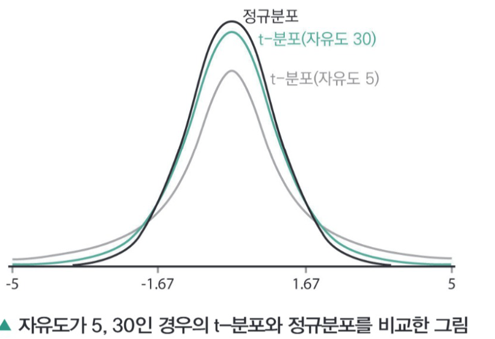
- 다시 말해서 모집단의 분포가 정규분포를 이루며, 표준편차 σ가 알려지지 않을 때에는 t−분포를 사용하는 것이 원칙이나 표본의 크기가 클 때에는 표본의 표준편차와 모집단의 표준편차의 차이가 작기 때문에 t−통계량 또는 z−통계량 중 어느 것을 사용해도 비슷한 결과를 얻는다.
어느 초등학교 1학년 여자아이들의 혈압자료에서 5명을 랜덤하게 택한 결과가 다음과 같다고 할 때
이를 이용하여 초등학교 여학생 혈압의 대표 값에 대한 95% 신뢰구간을 구해보자.
이 표본으로부터 계산된 표본평균과 표본표준편차 S는 각각 다음과 같다.
이 표본의 경우 자유도는 5−1=4이다. 표로부터 자유도가 4인 t0.025경우는 2.780이므로 공식에 대입하면 다음이 성립한다.
여기서 2.24는 표본크기 5의 제곱근이다. 따라서 이 표본결과 초등학교 여자아이들의 혈압은 88에서 105 사이에 있다고 할 수 있다.
③ 모평균 신뢰구간 정리
| 구분 | 신뢰구간 100(1−α%) |
|---|---|
| 모집단의 분산을 아는 경우 | X − zα2 · σn ≤ μ ≤ X + zα2 · σn |
| 모집단의 분산을 모르는 경우 (표본크기가 작은 경우) |
X − tα2, n−1 · Sn ≤ μ ≤ X + tα2, n−1 · Sn |
| 모집단의 분산을 모르는 경우 (표본크기가 큰 경우) |
X − zα2 · Sn ≤ μ ≤ X + zα2 · Sn |
4) 모분산의 신뢰구간
모집단 X가 정규분포를 따른다고 할 때, 모집단으로부터 n개의 표본을 추출하여 표본공간의 표본분산을 S2이라고 하면 모분산 σ2에 대해서
그러면 100(1−α)%인 신뢰 구간은
이다.
상기의 관계식을 정리하면
이 신뢰구간이 된다.
한 제약회사에서 개발한 진통제의 지속시간에 대한 효과를 알아보기 위하여 임상실험 대상자 30명에게 투약 후 진통억제 시간을 조사하였다. 실험 대상자들은 평균 4.3시간 지속효과를 나타내었으며 분산은 2.5시간으로 나타났다.
진통제 효과의 분산을 확인하기 위하여 95% 신뢰도의 분산신뢰구간을 확인하면 아래와 같다.
모집단에서 n=30이고 표본분산 S2=2.50이다. 그럼 모분산 σ2에 대해서
여기서 χ2(n−1)은 자유도가 n−1인 χ2 분포를 따르므로 χ2 분포표에서
5) 모비율의 신뢰구간
모집단 X가 이항분포 B(n,p)를 따르고 모비율 p에 대한 표본집단의 비율 p̂=x/n이므로 n이 충분히 크다고 하면 근사적으로 N(μ,σ2)=N(np,np(1−p))이다. 따라서
모비율 p에 대한 100(1−α)%의 신뢰구간은
시중에서 판매되는 한 제품의 불량률을 추정하려고 한다. 900대의 제품을 랜덤으로 조사하였더니 불량률이 450대였다. 판매되는 제품의 불량률에 대한 90% 신뢰구간을 구하여 보면 아래와 같다.
따라서 불량률 p의 신뢰구간은 다음과 같다. (α=0.1 , zα/2=1.64)
6) 신뢰구간 표본 크기의 결정
- 모평균에 의한 신뢰구간을 이용한 표본의 크기
신뢰구간 100(1−α)%에 대한 신뢰구간은 다음과 같다.
상기식을 정리해서 보면 신뢰구간상의 허용오차 범위는
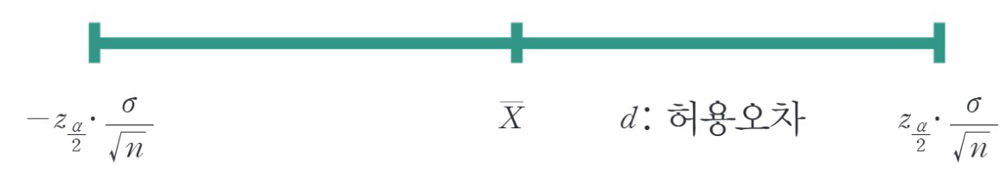
그러므로 허용오차 d에 대해서
n에 대해서 정리하면
- 모비율에 의한 신뢰구간을 이용한 표본의 크기
＊＊ 모비율에 대한 정보가 주어지지 않은 경우 p=1/2로 놓고 표본의 크기를 결정한다. 따라서
어느 도시에서 시민들의 여당후보지지율을 조사하고자 한다. 여당후보지지율의 95% 추정오차한계가 5% 이내가 되기 위한 표본크기를 구하여라.
α=0.05일 때, zα/2= 1.960 d=0.05 이고 지지율에 대한 모비율정보가 없으므로
04 가설검정
모집단에 대해 어떤 가설을 설정하고 그 모집단으로부터 추출된 표본을 분석함으로써 그 가설이 틀리는지 맞는지 타당성 여부를 결정(검정)하는 통계적 기법이다.
모집단의 특성에 대한 주장은 옳을 수도 있고 틀릴 수도 있다. 객관적이고 과학적인 판단을 위해서는 표본을 선택하여 그 표본을 이용한 결과를 이용하여 가설을 검정해야 한다.
- 검정통계량(Test Statistic)
- 연구자에 의해 설정된 가설은 표본을 근거로 하여 채택여부를 결정짓게 되는데 이때 사용되는 표본통계량을 검정통계량이라 정의한다.
- 가설검정(Testing Hypothesis)
- 검정통계량의 표본분포에 따라 채택여부를 결정짓는 일련의 통계적 분석 과정을 가설검정이라 하며 일반적으로 몇 단계의 절차를 거쳐 검정이 수행된다.
1) 가설검정의 절차
① 가설의 설정
집단의 특성을 파악하기 위해서 표본을 이용한 의사결정은 오류의 가능성이 상존한다. 따라서 가설검정은 오류의 가능성을 사전에 관리하는 것이 중요하다. 오류의 허용확률을 정해 놓고 그 기준에 따라 가설의 채택이나 기각을 결정한다.
- 귀무가설(Null Hypothesis, H0) : 현재 통념적으로 믿어지고 있는 모수에 대한 주장 또는 원래의 기준이 되는 가설이다.
- 대립가설(Alternative Hypothesis, H1) : 연구자가 모수에 대해 새로운 통계적 입증을 이루어 내고자 하는 가설이다.
- 표본을 통해 새롭게 주장하는 대립가설이 충분히 입증되지 못한다면, 연구자는 현재 믿어지고 있는 주장인 귀무가설을 그대로 받아들여야 할 것이다.
② 유의수준 α
가설검정의 결과로 가설의 채택여부를 결정하게 될 때 우리는 두 가지의 오류를 생각할 수 있다.
| 검정결과 \ 실제상황 | H0 | H1 |
|---|---|---|
| H0 채택 | success | Type 2 Error |
| H0 기각 | Type 1 Error | success |
- 제 1종 오류(Type I Error) : 귀무가설이 참일 때 귀무가설을 기각하도록 결정하는 오류(즉, 대립가설을 채택)(무죄인데 유죄라고 할 경우 − 더 중요함)
- 제 2종 오류(Type II Error) : 귀무가설이 거짓인데 귀무가설을 채택할 오류, 또는 대립가설이 참일 때 귀무가설을 채택하도록 결정하는 오류(즉, 대립가설을 기각)(유죄인데 무죄라고 할 오류)
- 유의수준(Significance Level) : 제1종 오류를 범할 확률의 최대 허용한계를 유의수준 또는 위험률(risk ratio)이라고 하며 가설검정에서 판단의 기준으로 삼고 있다.
- 가설검정의 유의수준 α는 귀무가설이 참인데도 이것을 기각하게 될 확률을 말한다. 일반적으로 1%, 5%, 10% 유의수준 등이 많이 이용된다.
- 귀무가설이 맞는데 틀렸다고 결론 내렸을 확률(귀무가설을 잘못 기각할 확률), 즉 유의수준이 낮을수록 연구자는 귀무가설을 기각하고 자신의 주장에 확신을 가질 수 있다.
- p−value가 0.07인 경우 귀무가설을 기각하면 잘못 기각할 확률이 0.07이 되고 0.03인 경우 귀무가설을 기각하면 잘못 기각할 확률이 0.03이 된다. 따라서 전자의 경우보다 후자의 경우 귀무가설을 보다 자신 있게 기각하는 것이다.
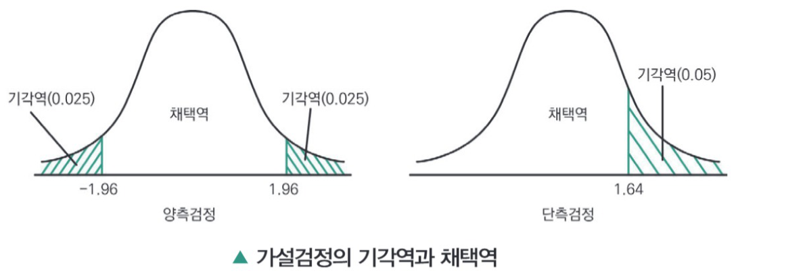
- 귀무가설의 기각여부는 p−value와 α의 크기에 달려 있다. 즉 p−value가 작을수록 그리고 α의 값이 클수록 귀무가설을 기각할 수 있다.
- 유의수준은 곧 1종 오류의 확률이다. 허용 유의수준 α값은 보통 0.05로 정해지지만 경우에 따라서는 0.01 혹은 0.1이 사용되기도 한다. α값이 0.05라는 것은 95% 신뢰수준을 의미한다.
2) 검정통계량 및 표본분포의 결정
- 모수에 대한 정보는 표본에 함축되어 있다. 따라서 표본을 통하여 가설의 채택 여부를 결정짓게 되는데, 이때 사용되는 표본 통계량을 검정통계량이라 한다.
- 또한 유의수준에 따른 귀무가설의 기각역을 결정하기 위해서, 귀무가설이 참일 때 검정통계량의 확률분포를 알아야만 하며, 알려져 있지 않을 때에는 통계학의 극한이론에 근거하여 근사적인 분포가 정해져야 한다.
3) 기각역의 결정
표본에서 계산된 통계량이 가설로 설정한 모집단의 성격과 현저한 차이가 있을 경우에는 모집단에 대해 설정한 귀무가설을 기각하게 된다.
- 이때 귀무가설을 기각하게 되는 검정통계량의 범위를 기각역(Critical Region, Rejection Region)이라 하며, 기각역의 경계값을 임계치라 한다.
- 임계치(Critical Value) : 주어진 유의수준 α에서 귀무가설의 채택과 기각에 관련된 의사결정을 할 때, 그 기준이 되는 점이다.
- 기각역은 검정통계량의 확률분포(귀무가설이 참일 때)와 유의수준 α와 대립가설의 형태(우측, 좌측 또는 양측)에 따라 단측 또는 양측 검정통계량이 설정된다.
- 양측 검정 : 가설검정에서 기각영역이 양쪽에 있는 것이다.
- 단측 검정 : 가설검정에서 기각영역이 어느 한쪽에만 있게 되는 경우이다.
4) 검정통계량의 계산
① 의사결정
표본의 관측치로부터 계산된 검정통계량의 값이 기각역에 속하면 귀무가설을 기각하며(즉, 대립가설을 채택) 그렇지 않으면 귀무가설을 채택(즉, 대립가설을 기각)한다.
② 통계량의 계산과 임계치의 비교
- 임계치가 결정되면 표본에서 얻은 통계량이 기각영역에 속하는지 채택 영역에 속하는지를 결정해야 한다.
- 임계치는 X, z, t 값으로 나타낼 수 있다. 예를 들어 표본을 기초로 계산된 z(t) 값을 계산된 z(t) 값(computed z(t)−value)이라고 부르며, zc(tc)로 표시한다.
- 계산한 z(t) 값인 zc(tc)와 임계치를 비교해서, zc(tc)가 기각영역 안에 있으면 H0를 기각하고 채택 영역 안에 있으면 H0를 채택한다.
③ p−value
주어진 자료로서 귀무가설을 기각하려고 할 때 필요한 최소의 유의수준을 의미하며, 다른 용어로 유의성 확률(Significant Probability) 또는 관측된 유의수준(Observed Significance Level)이라고도 한다. p−값이 계산되는 경우에는 유의수준 α와 비교하여 다음과 같은 결정을 할 수 있다.
5) 표본의 평균 검정
단일 표본에서 모평균에 대한 검정은 표본평균 X를 이용한다.
- X를 이용한 검정법을 만들려면 X의 분포를 알아야 한다. 다음 아래의 절차를 따라서 검정 절차를 수행한다.
① 집단크기에 따른 검정통계량의 선택
- 대표본 또는 모집단이 정규분포 : Z = X − μσ/n ∼ N(0, 1)
- 정규분포 따르면서 소표본 : T = X − μS/n ∼ t(n−1)
② 가설의 설정 : μ에 대한 검정 절차
- 귀무가설 H0 : μ = μ0
- 대립가설 H1 : μ 〉μ0 , H1 : μ 〈μ0 또는 H1 : μ ≠ μ0
③ 검정통계량
z−검정 또는 t−검정을 시행한다(선택은 ① 내용 참고).
④ 검정 : α 오류값의 z−검정 또는 t−검정과 비교
- H1 : μ 〉μ0 일 때, z ≥ zα
- H1 : μ 〈μ0 일 때, z ≤ −zα
- H1 : μ ≠ μ0 일 때, |z| ≥ zα/2
- t−검정의 경우는 자유도 (n−1)인 t−분포 사용
어느 고등학교의 학생의 용돈수준을 조사하려고 한다.
16명의 학생을 표본으로 조사하였더니, 한 달 용돈이 96,000원이었다. 그 학교 학생 전체 한 달 용돈의 표준편차가 6,000원이었다면, 그 학교 학생들의 한 달 용돈이 월 100,000원 이상이라고 할 수 있을까?(기존에 100,000원 이상이라는 귀무가설을 가정) α−오류를 5%로 하여 검정하라.
이 값은 −1.64보다 작으므로 학생의 한 달 용돈이 10만 원이 된다고 볼 수 없다.
| t−분포 | 정규분포 | |
|---|---|---|
| 표본의 크기 |
|
|
| 모집단의 표준편차 |
|
|
| 분포의 형태 | 정규분포와 유사하지만 표본 크기가 작을 때 자유도에 의해 더 두터운 꼬리를 가짐 | 대표적인 연속형 확률분포 |
6) 두 독립표본의 평균차이 검정
두 개의 독립 표본 X, Y가 각각 N(μ1,σ12), N(μ2,σ22)를 따를 때, 두 모집단의 평균차이 μ1−μ2의 검정은 다음과 같은 절차를 따른다.
① 가설의 설정 : μ에 대한 검정 절차
- 귀무가설 H0 : μ1 − μ2 = 0
- 대립가설 H1 : μ1−μ2 〉0 , H1 : μ1−μ2 〈0 또는 H1 : μ1 − μ2 ≠ 0
② 검정통계량 설정
위의 가설을 검정하는 데 사용되는 검정통계량은 X−표본과 Y−표본의 표본평균인 X와 Y의 차이에 근거하여 구성한다.
여기서 Sp2 = (n−1)S12 + (m−1)S22n+m−2 으로 공통분산(Common Variance) σ2의 합동표본분산(Pooled Sample Variance)이며 S12, S22는 각각의 표본의 표본분산을 말한다. 검정통계량 T는 자유도 m+n−2인 t−분포를 따른다.
③ 기각역의 설정
검정통계량 T에 의한 기각역은 다음의 그림과 같이 구성할 수 있다. 이 그림에서 색칠된 부분은 귀무가설을 기각하게 되는 검정통계량의 범위를 나타내며, 임계치도 자유도 m+n−2인 t−분포표로부터 얻을 수 있다.
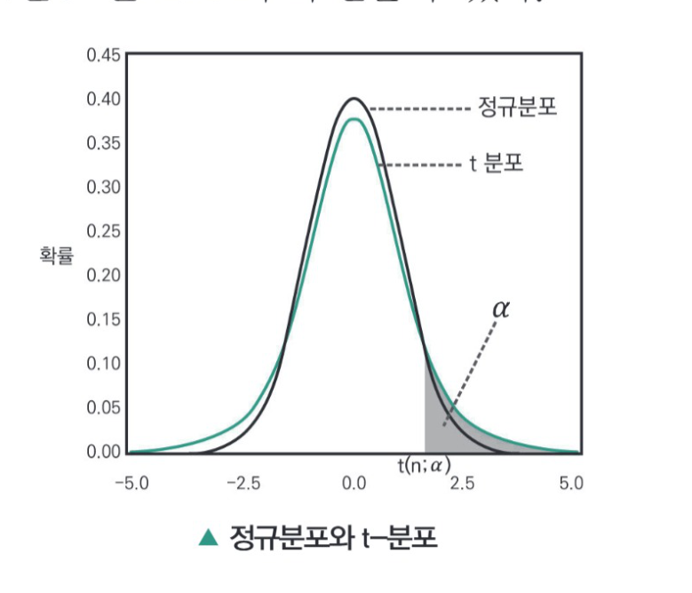
두 종류의 사료가 젖소의 우유 생산량에 미치는 영향의 차이를 조사하고자 한다.
젖소들 가운데 랜덤하게 8마리씩 두 그룹을 뽑아 한 그룹에는 사료 1을, 다른 그룹에는 사료 2를 주면서 3주간 우유 생산량을 조사한 결과 다음과 같은 자료를 얻었다. 두 종류의 사료가 우유 생산량에 차이를 준다고 할 수 있는지를 유의수준 5%에서 검정해 보면 다음과 같다.
| 사료1 | 54 | 60 | 66 | 53 | 62 | 61 | 42 | 50 |
| 사료2 | 65 | 70 | 62 | 67 | 59 | 45 | 60 | 52 |
먼저 두 사료에 대한 평균과 표준편차를 구하면
| 표본의 크기 | 평균 | 표준편차 | |
|---|---|---|---|
| 사료1 | 8 | 56 | 7.76 |
| 사료2 | 8 | 60 | 8.18 |
귀무가설 H0 : μ1−μ2=0
대립가설 H1 : μ1−μ2≠0이고 유의수준 α는 0.05이다.
검정통계량은 T = X−YSp1n + 1m 이고 기각역은 |T|≥t0.025(8+8−2)=t0.025(14)=2.145
이므로 H0를 기각할 수 없다. 즉, 두 사료에 대한 우유 생산량이 특별히 다르다고 볼 수 없다.
7) 대응표본의 평균차이 검정
실험단위를 동질적인 쌍으로 묶은 다음, 각 쌍의 실험단위에서 랜덤하게 선택하여 두 처리를 적용하고, 각 쌍에서 관측값의 차를 이용하여 두 모평균의 차에 관한 추론 문제를 다룰 수 있다. 이와 같은 방법을 대응비교(paired comparison) 또는 쌍체비교라고 한다.
① 통계량의 설정
n쌍의 독립적인 표본쌍(쌍체 표본) (X1,Y1), (X2,Y2),⋯,(Xn,Yn)이 주어지고, 각 쌍의 차이를 Di=Xi−Yi (i=1,2,⋯,n)로 정의할 때, Di는 N(μD, σD2)로부터의 확률표본으로 가정한다.
② 가설의 설정
- 귀무가설 H0 : μD = 0
- 대립가설 H1 : μD ≠ 0, H1 : μD〉0 또는 H1 : μD〈0
③ 검정통계량 및 표본분포
위의 가설을 검정하는 데 사용되는 검정통계량은 차이의 평균에 근거하여 다음과 같이 구성한다.
- 검정통계량 : T = DSD/n 여기서 SD2 = Σ(Di − D)2(n−1)의 표본분산
T의 귀무가설이 참일 때, 자유도 n−1인 t−분포를 따른다.
(만일 표본의 크기가 크면 검정통계량의 값은 표분정규분포를 따름)
④ 대립가설에 따른 기각역 결정
- 양측으로 설정되어 있으면, 계산된 검정통계량의 값이 |T| 〉t(α/2, n−1)을 만족할 때 유의수준 α에서 귀무가설을 기각하게 된다.
- 여기서 임계치 t(α/2, n−1)는 자유도 (n−1)인 t−분포의 100(1−α/2) 백분위수를 나타낸다. 대립가설이 우측 또는 좌측으로 설정되어 있을 때도 같은 방법으로 결정된다.
어느 제약회사에서 비만증 환자를 위한 약을 개발하였다. 이 약이 부작용 없이 실제로 체중감소에 도움이 되는지를 알아보기 위하여 16명에게 임상실험을 하였다. 약을 투여하기 전의 체중(X1)과 2주간 약을 투여한 후의 체중(X2)을 측정하고 이들의 체중감소를 조사한 결과 체중의 차의 표본평균과 표본표준편차는 각각 다음과 같았다.
D=0.78(kg), SD=2.4
이 약은 체중감소에 효과적이라고 할 수 있는지를 유의수준 1%에서 검정 해보면
귀무가설 H0 : μD=0
대립가설 H1 : μD〉0 이고 유의수준은 α=0.01 이므로
기각역은 T〉t(α, n−1)=t(0.01, 15)=2.602 (도서 뒤 t−분포표 참조)
1.30〈2.602이므로 H0를 기각시키지 못한 결과를 나타내고 이로써 약이 체중감소에 효과가 있다는 근거는 없다고 결론 내릴 수 있다.
8) 단일표본 모분산에 대한 가설검정(χ2 검정)
모집단의 평균과 분산이 각각 μ, σ2인 정규모집단 N(μ,σ2)에서 μ, σ2가 미지인 경우 모분산 σ2에 대한 가설검정은 점추정량인 s2을 이용하여 검정한다.
① 가설의 설정
- 귀무가설 H0 : σ2 = σ02
- 대립가설 H1 : σ2 ≠ σ02(양측검정), 또는 H1 : σ2 〉σ02(단측검정:우측검정), H1 : σ2 〈σ02(단측검정:좌측검정)
② 검정통계량
- 자유도 ϕ = n − 1 검정통계량에 따른 기각역
| 귀무가설 | 대립가설 | 검정 통계량 |
|---|---|---|
| H0 : σ2=σ02 | H1 : σ2≠σ02 | χ2 < χ21−α2, n−1 또는 χ2α2, n−1 < χ2 |
| H0 : σ2≤σ02 | H1 : σ2>σ02 | χ2α, n−1 < χ2 |
| H0 : σ2≥σ02 | H1 : σ2<σ02 | χ2 < χ21−α, n−1 |
- 통계적 결정 : 검정통계량이 기각역에 포함되면 귀무가설(영가설)을 기각한다.
어느 기계회사의 생산제품의 수명은 분산이 1200시간인 정규분포를 따른다. 새로운 공정설계에 의하여 일부를 변경하고 이 공정에서 생산된 제품 30개를 추출하여 분산을 조사하니 1050시간이었다. 공정을 변경하면 제품수명의 변동이 적어지는지 유의수준 α=0.05 수준에서 검정하라.
귀무가설은
여기에서 대립 가설은
로 세울 수 있다.
자유도는 Φ=n−1=30−1=29이고 이에 따른 검정 통계량은 다음 아래와 같다.
이에 따른 기각역은 유의수준에 따라서 (χ2분포표에 의해)
그러므로 25.375〉17.71이므로 H0를 기각할 수 없다(채택). 새로운 공정으로 변경하더라도 제품수명의 변동은 적어지지 않는다.
9) 두 모분산비에 대한 가설 검정(F 검정)
모평균과 모분산을 모르는 경우 두 정규모집단에서 각각 표본크기가 n1, n2 이며, 표본분산이 s12, s22이라고 하면 두 모분산의 비 σ12/σ22에 대한 가설검정의 방법은 다음과 같다.
① 가설의 설정
- 귀무가설 H0 : σ12 = σ22
- 대립가설 H1 : σ12 ≠ σ22, H1 : σ12 〉σ22 또는 H1 : σ12 〈σ22
② 검정통계량 : F = S12/S22
- 자유도 ϕ1 = n1 − 1, ϕ2 = n2 − 1인 F 검정통계량에 따른 기각역
| 귀무가설 | 대립가설 | 검정 통계량 |
|---|---|---|
| H0 : σ12=σ22 | H1 : σ12≠σ22 | F > F(ϕ1, ϕ2; 1−α2) 또는 F < F(ϕ1, ϕ2; α2) |
| H0 : σ12≤σ22 | H1 : σ12>σ22 | F > F(ϕ1, ϕ2; α) |
| H0 : σ12≥σ22 | H1 : σ12<σ22 | F < F(ϕ1, ϕ2; 1−α) |
어떤 화장품 회사의 두 공장에서 최근 샴푸 1병의 내용물이 외관상 변동이 있다고 판단되어 각 공장에서 임의로 20병씩 추출하여 측정한 결과 제1공장의 평균과 분산은 각각 x1=1013.5, s12=39.0, 제2공장의 평균과 분산은 x2=1009.7, s22=26.12였다. 내용물의 변동에 차이가 있다고 말할 수 있는지, 유의수준 α=0.05에서 검정한다.
귀무가설 H0 : σ12=σ22은 대립가설 H1 : σ12≠σ22로 놓고 보면
F 검정통계량에 따라서
이다.
n1=20, n2=20, ϕ1=n1−1=19, ϕ2=n2−1=19이고 F 분포표에서
또 다른 경우는
F 분포의 성질에 의해서(서로 역수관계)
(1), (2)에 의해서 F(19, 19; 1−0.025) ≤ F ≤ F(19, 19; 0.025) 사이에 존재하므로(기각역에 포함되지 않음)
H0 즉, 등분산이 채택된다. 그러므로 두 공장의 내용물의 차이는 없다고 할 수 있다.
합격을 다지는 예상문제
(나) 평균, 분산, 변동계수 등의 값도출을 통해 분석 대상의 구조적 특이성을 밝혀낸다.
(다) 추정(estimation)은 표본을 통해 모집단 특성이 어떠한가에 대해 추측하는 과정이다. 표본평균 계산을 통해 모집단평균을 추측해보거나, 모집단 평균에 대한 95% 신뢰구간의 계산 과정을 나타낸다.
(라) 데이터의 시각화를 통해서 데이터의 분포모양 구조적 특이성에 대한 가설과 실제 간의 차이를 밝혀낸다.
- 가, 나
- 나, 다
- 다, 라
- 가, 다
- 점추정은 모집단의 모수를 하나의 값으로 추정해 주는 것이다.
- 구간추정은 모수가 포함되는 확률변수구간을 어떤 신뢰성 아래 추정하는 것이다.
- 우리가 아무리 좋은 추정방법을 사용한다고 하더라도 표본을 택하고 이 표본으로부터 계산된 추정값이 목표값을 정확하게 추정한다고 주장할 수는 없다.
- 구간추정에 오차(error)의 개념을 도입하여 모수가 포함되는 확률변수 구간 내의 가장 신뢰성을 가지는 값 하나를 선택하는 것이 점추정이다.
- 모수(parameter)는 모집단의 특성을 수치화하여 나타낸 것이다.
- 모수의 추정량의 선택기준으로 불편성, 효율성, 일치성, 충분성이 있다.
- 충분성은 추정량이 모수에 대하여 가장 많은 정보를 제공할 때 그 추정량은 충분추정량이 된다.
- 일치성은 표본 크기에 대한 최적치를 반영하여 추정값의 품질의 척도를 제시한다.
- 기대하는 추정량과 모수의 차이를 편향(bias)이라고 한다.
- 임의의 추정량의 편향을 B(θ̂)이라고 한다면 B(θ̂) = E(θ̂) − θ로 정의할 수 있다.
- 불편추정량(Unbiased Estimator)은 B(θ̂) = 0, 즉 편향이 0이 되는 상황의 추정량 θ̂를 불편추정량이라고 한다.
- 표본평균은 이상치의 영향으로 값의 변화가 커지므로 대표적인 불편추정량이 아니다.
- 3
- 4.3
- 5
- 2.5
- θ̂1은 불편추정량이나 θ̂2는 불편추정량이 아니다.
- θ̂2은 불편추정량이나 θ̂1는 불편추정량이 아니다.
- θ̂1, θ̂2는 불편추정량이나 효율성 측면에서 비교하여 보면 θ̂1이 더 효율적이다.
- θ̂1, θ̂2는 불편추정량이나 효율성 측면에서 비교하여 보면 θ̂2이 더 효율적이다.
- 모집단의 모분산을 σ2, 모집단에서 얻는 크기가 n인 확률표본 X의 표본평균을 X라고 할 때 모평균 μ의 신뢰구간 100(1−α)%는 X − Zα2·σn ≤ μ ≤ X + Zα2·σn 이다.
- Zα2 는 오른쪽 면적이 α2 인 표준정규분포를 따르는 Z값이다.
- 신뢰수준 90%인 경우의 신뢰구간은 X − 1.960·σn ≤ μ ≤ X + 1.960·σn으로 나타낸다.
- 신뢰수준 99%인 경우의 신뢰구간은 X − 2.576·σn ≤ μ ≤ X + 2.576·σn으로 나타낸다.
285, 300, 311, 301, 294
- 표본평균 300.1, 표준오차 7.75
- 표본평균 300.1, 표준오차 2.45
- 표본평균 333.45, 표준오차 7.75
- 표본평균 333.45, 표준오차 2.45
| 구분 | 신뢰구간 100(1−α)% | |
|---|---|---|
| (가) | 모집단의 분산을 아는 경우 | X − Zα2·σn ≤ μ ≤ X + Zα2·σn |
| (나) | 모집단의 분산을 모르는 경우 (표본크기가 작은 경우) | X − tα2,n−1·Sn ≤ μ ≤ X + tα2,n−1·Sn |
| (다) | 모집단의 분산을 모르는 경우 (표본크기가 큰 경우) | X − Zα2·Sn ≤ μ ≤ X + Zα2·Sn |
- 가
- 가, 나
- 가, 다
- 가, 나, 다
- p(65,550 ≤ μ ≤ 98,450)
- p(62,400 ≤ μ ≤ 101,600)
- p(56,300 ≤ μ ≤ 107,700)
- p(56,500 ≤ μ ≤ 105,300)
- 표본결과 초등학교 여자아이들의 혈압은 88에서 106 사이에 있다고 할 수 있다.
- 표본결과 초등학교 여자아이들의 혈압은 90에서 104 사이에 있다고 할 수 있다.
- 표본결과 초등학교 여자아이들의 혈압은 92에서 109 사이에 있다고 할 수 있다.
- 표본결과 초등학교 여자아이들의 혈압은 80에서 120 사이에 있다고 할 수 있다.
- (6.8 ∼ 7.2)
- (7.2 ∼ 7.8)
- (6.8 ∼ 6.9)
- (7.0 ∼ 7.2)
- 모비율 p에 대한 표본집단의 비율을 p̂이라 하면 p̂ − Zα2pn < p < p̂ + Zα2pn 이다.
- 모비율 p에 대한 표본집단의 비율을 p̂이라 하면 p̂ − Zα2qn < p < p̂ + Zα2qn 이다.
- 모비율 p에 대한 표본집단의 비율을 p̂이라 하면 p̂ − Zαpqn < p < p̂ + Zαpqn 이다.
- 모비율 p에 대한 표본집단의 비율을 p̂이라 하면 p̂ − Zα2pqn < p < p̂ + Zα2pqn 이다.
- 0.048716 〈 p 〈 0.165084
- 0.038716 〈 p 〈 0.115084
- 0.030716 〈 p 〈 0.127084
- 0.040716 〈 p 〈 0.12794
- 31
- 78
- 155
- 173
- 1,537
- 2,663
- 25,343
- 66,564
- 0.9772
- 0.95
- 0.05
- 0.0228
- 귀무가설을 기각하게 되는 검정통계량의 범위를 기각역(Critical Region, Rejection Region)이라 한다.
- 임계치(Critical Value)는 주어진 유의수준 α에서 대립가설의 채택과 기각에 관련된 의사결정을 할 때, 그 기준이 되는 점이다.
- 양측검정은 가설검정에서 기각영역이 양쪽에 있는 것이다.
- 단측검정은 가설검정에서 기각영역이 어느 한쪽에만 있게 되는 경우이다.
- 연구자에 의해 설정된 가설은 모집단 전체를 근거로 하여 채택여부를 결정짓게 되는데 이때 사용되는 통계량을 검정통계량이라 정의한다.
- 검정통계량의 표본분포에 따라 채택여부를 결정짓는 일련의 통계적 분석과정을 가설검정이라 하며 일반적으로 몇 단계의 절차를 거쳐 검정이 수행된다.
- 귀무가설(Null Hypothesis, H0)은 연구자가 모수에 대해 새로운 통계적 입증을 이루어 내고자 하는 가설이다.
- 대립가설(Alternative Hypothesis, H1)은 현재 통념적으로 믿어지고 있는 모수에 대한 주장 또는 원래의 기준이 되는 가설이다.
- 제1종 오류(Type I Error)는 귀무가설이 참일 때 귀무가설을 기각하도록 결정하는 오류이다.
- 제2종 오류(Type II Error)는 귀무가설이 거짓인데 귀무가설을 채택할 오류이다.
- 제3종 오류(Type III Error)는 귀무가설, 대립가설 전부가 거짓인 오류이다.
- 가설검정의 유의수준 α는 귀무가설이 참인데도 이것을 기각하게 될 확률을 말한다.
− 대표본 또는 모집단이 정규분포 : ( 가 )
− 정규분포 따르면서 소표본 : ( 나 )
- 가) Z = X−μσ/n∼N(0,1) 나) T = X−μσ∼t(n−1)
- 가) Z = X−μσ/n∼t(n−1) 나) T = X−μσ∼t(n−1)
- 가) Z = X−μσ/n∼N(0,1) 나) T = X−μS/n∼t(n−1)
- 가) Z = X−μσ/n∼N(0,1) 나) T = X−μσ∼N(0,1)
- 학생의 한 달 용돈이 10만 원이 된다고 볼 수 없다.
- 학생의 한 달 용돈이 10만 원이 된다고 볼 수 있다.
- 학생의 한 달 용돈이 10만 원이 타당성 검정 자체가 불가능하다.
- 학생의 한 달 용돈이 10만 원이 된다는 점은 표본에 따라 달라진다.
- 검정 통계량 T = X−YSp1n+1m , Sp2 = (n−1)S12+(m−1)S22n+m−2 으로 공통분산 σ2의 합동표본분산이며, S12, S22는 각각의 표본의 표본분산을 말한다. 검정 통계량 T는 자유도 m+n−2인 t−분포를 따른다.
- 검정 통계량 T = X−YSp1n+1m , Sp2 = (n−1)S12+(m−1)S22n+m+2 으로 공통분산 σ2의 합동표본분산이며, S12, S22는 각각의 표본의 표본분산을 말한다. 검정 통계량 T는 자유도 n+m+2인 t−분포를 따른다.
- 검정 통계량 T = X−YSpnm+1n , Sp2 = (n−1)S12+(n−1)S22n+m−2 으로 공통분산 σ2의 합동표본분산이며, S12, S22는 각각의 표본의 표본분산을 말한다. 검정 통계량 T는 자유도 n+m−2인 t−분포를 따른다.
- 검정 통계량 T = X−YSpmn+1m , Sp2 = (m−1)S12+(m−1)S22n+m−2 으로 공통분산 σ2의 합동표본분산이며, S12, S22는 각각의 표본의 표본분산을 말한다. 검정 통계량 T는 자유도 n+m−2인 t−분포를 따른다.
| 사료1 | 54 | 60 | 66 | 53 | 62 | 61 | 42 | 50 |
| 사료2 | 65 | 70 | 62 | 67 | 59 | 45 | 60 | 52 |
- 사료1이 우유 생산량 향상에 더 기여한다고 판단 가능하다.
- 사료2가 우유 생산량 향상에 더 기여한다고 판단 가능하다.
- 두 사료에 대한 우열은 못 가르나 차이가 있음을 알 수 있다.
- 두 사료에 대한 우유 생산량이 다르다고 볼 수 없다.
A 증권사는 매일 100건의 무작위 고객응대에 대해서 일일 불만 건수는 평균 2.7회 분산 1.1이었다. B 증권사의 경우는 무작위 120건의 조사에 대해서 평균 2.4회 분산 0.9를 나타내었다.
두 증권사의 불만족 횟수 차이에 대한 90% 신뢰구간을 구하고 두 증권사의 차이가 있는지를 10% 유의수준에서 검정하였을 때 다음 중 맞는 것은?
- 신뢰구간 0.076, 0.524, 검정결과 차이가 있다 볼 수 있다.
- 신뢰구간 0.076, 0.524, 검정결과 차이가 없다 볼 수 있다.
- 신뢰구간 0.9476, 0.924, 검정결과 차이가 있다 볼 수 있다.
- 신뢰구간 0.9476, 0.924, 검정결과 차이가 없다 볼 수 있다.
- 기계에 이상이 있다고 판단 가능하다.
- 기계에 이상이 없다고 판단 가능하다.
- 기계에 이상이 있는지 없는지 판단이 불가능하다.
- 현재 데이터로는 기계 이상 유무를 판단 불가능하며 샘플수를 늘리면 판단 가능하다.
원본 PDF는 31쪽(책 1-274 ~ 1-341)에서 끝난다. 1-341이 예상문제 26번으로 마무리되므로 SECTION 02 예상문제(01~26)의 정답 & 해설은 책 1-342 이후에 실려 있어 이 PDF에는 포함되어 있지 않다.
결락이 아니라 제공 파일의 수록 범위가 여기까지인 것이다. 해설이 필요하면 해당 지면을 추가로 받아 이어붙이면 된다.